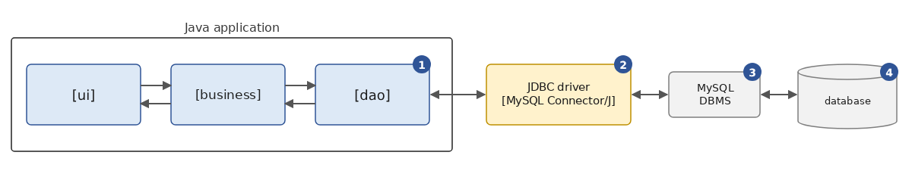

10. 使用 JDBC 访问数据库
先决条件：本章末尾所述的 [Tax] 应用程序第 6 版，复用了第 5 版（第 6 章）中的 [tax-dao]、[tax-business] 和 [tax-ui] 模块。在构建或打开你的项目之前，必须已使用在 [06-architectures/TaxV5] 文件夹中输入的 [mvn install] 命令，把第 5 版安装到本地 Maven 仓库中（参见第 6 章中关于 [mvn install] 的一节）。
10.1. JDBC 驱动程序
让我们回顾一下自第 6 章以来多次使用的分层架构。到目前为止，[Tax] 应用程序的 [dao] 层使用了三种数据源：
- 硬编码在代码中的数据（[HardwiredTax]）；
- 来自文本文件的数据（[FileTax]）；
- 来自 JSON 文件的数据（[JsonTax]）。
在本章中，我们研究数据来自数据库的情形。架构变为如下：

在上图中，[dao] 层 [1] 通过一个特定于所用 DBMS 的类库 [2] 与管理数据库 [4] 的 DBMS（数据库管理系统）[3] 通信。该库实现了 Java 平台的一个标准 API 功能，即 JDBC （“Java DataBase Connectivity”），自 1997 年的 1.1 版起它就是 JDK 的一部分。它被称为 JDBC 驱动程序 （“JDBC driver”）。所有常见的 DBMS 都有 JDBC 驱动程序，以 [.jar] 归档文件的形式发布。
JDBC 主要是一组接口，定义在 JDK 的 [java.sql] 和 [javax.sql] 包中，位于 [java.sql] 模块里：[Connection]、[Statement]、[PreparedStatement]、[ResultSet]、[DataSource]……JDBC 驱动程序提供实现这些接口的类。而应用程序代码只与接口交互：它通常不包含驱动程序类的名称。这不同于其他平台，那些平台的代码往往直接使用特定于每种 DBMS 的类（[MySqlConnection]、[SqlConnection]……）：在 Java 中，抽象从一开始就是常态，切换到另一种 DBMS 基本上只需更换驱动程序和数据库地址，我们稍后会看到这一点。不过，每种 DBMS 都有自己的 SQL 方言：这种独立性是有限度的，我们同样会讨论这一点。
我们只使用一种 DBMS，即 MySQL 8，附录“使用 Laragon 的 MySQL DBMS”会在 Windows 上安装它，同时安装其官方 JDBC 驱动程序 MySQL Connector/J，版本 9.7.0。数据库由使用 [mysql] 命令行客户端运行的 SQL 脚本创建；附录还展示了如何使用 Laragon 附带的 HeidiSQL 图形客户端创建它们。
10.2. 使用数据源的两种方式
访问数据库有两种不同的方式：
在连接模式下，应用程序：
- 打开到数据源的连接；
- 以读/写模式操作数据源；
- 关闭连接。
在离线模式下，应用程序：
- 打开到数据源的连接；
- 把来源中全部或部分数据的副本取到内存中；
- 关闭连接；
- 对内存中的数据副本进行读写操作；
- 工作完成后，打开连接，把修改后的数据发送到数据源以便更新，然后关闭连接。
连接模式是 JDBC 的 [ResultSet] 接口的模式：查询结果的行是在连接保持打开期间读取的。离线模式则是 [CachedRowSet] 接口（位于 [javax.sql.rowset] 包中，Java 5）的模式：一个内存中的表，由查询填充，离线修改，然后把其更改发送回数据库。这些“RowSet”组件在 JDK 25 中仍然存在，但在新应用程序中很少使用：在数据的内存副本上工作并随后保存更改，如今由 ORM （“Object-Relational Mapper”，对象关系映射器）来处理，它操作的是普通的 Java 对象而不是表中的行。Java 中使用最广泛的 ORM 是 Hibernate，它是第 11 章的主题。因此，我们将主要关注连接模式（Hibernate 就是基于它的），并且只在本章末尾通过一个示例演示离线模式。
10.3. 数据库操作的基本概念
10.3.1. 示例数据库
我们将通过一个 MySQL 数据库来讲解使用数据库的主要概念。它只包含一张表 [articles]，其中每一行描述商店中的一件商品：
- [ID]：商品的唯一标识符，它是表的主键；
- [NAME]：商品的名称，它同样是唯一的；
- [PRICE]：其价格；
- [CURRENTSTOCK]：其当前库存；
- [MINIMUMSTOCK]：最低库存水平，低于该水平就必须为该商品补货。
数据库由下面的 SQL 脚本创建 [sql/dbarticles.sql]：
| -- creation of the database [dbarticles] and of its table [articles]
-- execution: mysql -uroot < dbarticles.sql
-- the script is written in UTF-8
SET NAMES utf8mb4;
-- the database is recreated on each execution of the script
DROP DATABASE IF EXISTS dbarticles;
CREATE DATABASE dbarticles CHARACTER SET utf8mb4 COLLATE utf8mb4_0900_ai_ci;
-- choice of the current database
USE dbarticles;
-- creation of the articles table
CREATE TABLE articles (
ID INT PRIMARY KEY AUTO_INCREMENT,
NAME VARCHAR(30) NOT NULL,
PRICE DECIMAL(10,2) NOT NULL,
CURRENTSTOCK INT NOT NULL,
MINIMUMSTOCK INT NOT NULL,
-- integrity constraints
CONSTRAINT UNQ_NAME UNIQUE (NAME),
CONSTRAINT CHK_NAME CHECK (NAME <> ''),
CONSTRAINT CHK_PRICE CHECK (PRICE > 0),
CONSTRAINT CHK_CURRENTSTOCK CHECK (CURRENTSTOCK >= 0),
CONSTRAINT CHK_MINIMUMSTOCK CHECK (MINIMUMSTOCK >= 0)
);
-- insertion of data into the table
INSERT INTO articles (NAME, PRICE, CURRENTSTOCK, MINIMUMSTOCK) VALUES
('bike', 500, 10, 5),
('pump', 10, 10, 2),
('bow', 600, 4, 1),
('arrows - set of 6', 100, 12, 20),
('diving suit', 300, 8, 2),
('diver''s oxygen tanks', 120, 10, 5);
|
- 第 5 行：该脚本是 UTF-8 编码的文本文件。[SET NAMES utf8mb4] 向服务器指明这一点；否则，第 31–36 行中的任何带重音符号的字符都可能被客户端 [mysql] 误解；
- 第 8–9 行：如果数据库存在，就删除它，然后重新创建。因此该脚本可以多次运行，把数据库恢复到初始状态。[utf8mb4] 是 MySQL 的完整 Unicode 编码（MySQL 的旧编码 [utf8] 只能编码最多占三个字节的字符）；
- 第 12 行：[dbarticles] 成为当前数据库：后续的 SQL 命令都将在它上面执行；
- 第 15–27 行：表 [articles] 的定义：
- 第 16 行：列 [ID] 是表的主键（[PRIMARY KEY]）。[AUTO_INCREMENT] 属性是 MySQL 特有的，表示其值在插入行时由 DBMS 自己生成：1、2、3……其他 DBMS 有等价的概念，但语法不同（SQL Server 使用 [IDENTITY]，PostgreSQL 和 Oracle 使用 [GENERATED … AS IDENTITY] ）；
- 第 18 行：价格是一个精确的 10 位十进制数，小数点后有 2 位。避免对金额使用浮点类型，例如 [DOUBLE] （参见第 3 章中 [double] 和 [BigDecimal] 的区别）。SQL 类型 [DECIMAL] 对应于 Java 类 [BigDecimal]；
- 第 22–26 行：完整性约束。[UNQ_NAME] 禁止两件商品同名；[CHECK] 约束禁止空名称、负数或零价格，以及负库存。MySQL 在 8.0.16 版本之前会默默忽略 [CHECK] 约束；此后它就会强制执行这些约束；
- 第 30–36 行：插入六行。[ID] 列没有被初始化：由 DBMS 为它赋值。
该脚本使用命令行客户端 [mysql] 在 [sql] 文件夹中运行（在附录的安装中，MySQL 的用户 [root] 没有密码；否则，请添加 [-p] 选项，客户端会提示输入密码）：
| > mysql -uroot < dbarticles.sql
|
如果一切顺利，该命令不显示任何内容。你可以使用同一个客户端检查表的结构和内容：
| > mysql -uroot --default-character-set=utf8mb4 -t dbarticles -e "describe articles; select * from articles"
+--------------+---------------+------+-----+---------+----------------+
| Field | Type | Null | Key | Default | Extra |
+--------------+---------------+------+-----+---------+----------------+
| ID | int | NO | PRI | NULL | auto_increment |
| NAME | varchar(30) | NO | UNI | NULL | |
| PRICE | decimal(10,2) | NO | | NULL | |
| CURRENTSTOCK | int | NO | | NULL | |
| MINIMUMSTOCK | int | NO | | NULL | |
+--------------+---------------+------+-----+---------+----------------+
+----+----------------------+--------+--------------+--------------+
| ID | NAME | PRICE | CURRENTSTOCK | MINIMUMSTOCK |
+----+----------------------+--------+--------------+--------------+
| 1 | bike | 500.00 | 10 | 5 |
| 2 | pump | 10.00 | 10 | 2 |
| 3 | bow | 600.00 | 4 | 1 |
| 4 | arrows - set of 6 | 100.00 | 12 | 20 |
| 5 | diving suit | 300.00 | 8 | 2 |
| 6 | diver's oxygen tanks | 120.00 | 10 | 5 |
+----+----------------------+--------+--------------+--------------+
|
- 第 1 行：选项 [-t] 指定以表格形式显示；选项 [-e] 指定要执行的 SQL 命令，而选项 [--default-character-set=utf8mb4] 确保带重音符号的字符在 UTF-8 终端中正确显示；
- 第 3–9 行：表的结构，通过 MySQL 命令 [describe] 获得；
- 第 12–19 行：表的内容。[ID] 列中的值是由 DBMS 生成的。
关于区分大小写的说明：列名始终不区分大小写（[name] 和 [NAME] 指的是同一列），但表名是服务器上的文件名。它们在 Windows 上不区分大小写，而在 Linux 上区分大小写。为了确保示例在任何地方都能运行，这张表被命名为 [articles]，全部小写，查询中也按此写法。
本章中的程序会修改表 [articles]。这里显示的结果是在每个程序运行之前重新运行脚本 [dbarticles.sql] 得到的；希望精确重现相同结果的读者应当这样做。
现在我们有了数据库，就可以使用它了。在此之前，让我们先回顾一下 SQL 的几个要点。
10.3.2. SQL 语言的四条基本命令
SQL（“Structured Query Language”，结构化查询语言）是一种部分标准化的、用于查询和更新数据库的语言。所有 DBMS 的方言都遵循 SQL 的标准化部分，但会利用各自的特性为该语言添加专有扩展。我们已经遇到过两个例子：主键的自动生成，以及表列允许的数据类型，往往取决于 DBMS。
我们在这里介绍的 SQL 语言的四条基本命令是标准化的，所有 DBMS 系统都接受：
命令 | 作用 |
[select col1, col2, … from table1, table2, … where condition order by expression] | 用于从数据库中检索数据的查询。只有关键字 [select] 和 [from] 是必需的。对关键字 [from] 之后的所有表执行连接；只保留关键字 [select] 之后的列；只保留满足关键字 [where] 条件的行；所得的行按关键字 [order by] 中的表达式排序后，构成查询的结果。这个结果是一张表。 |
[insert into table(col1, col2, …) values (val1, val2, …)] | 向 [table] 中插入一行。[(col1, col2, …)] 指定要用值 [(val1, val2, …)] 初始化的行的列。 |
[update table set col1=val1, col2=val2, … where condition] | 根据 [condition] 更新 [table] 中的行（如果没有 [where]，则更新所有行）。对这些行，把 [coli] 列设置为 [vali]。 |
[delete from table where condition] | 删除[table] 中所有满足 [condition] 的行（如果没有 [where]，则删除所有行）。 |
我们将编写一个基于 [dbarticles] 发出 SQL 命令的控制台应用程序。下面是一个输出示例。建议读者理解所发出的 SQL 命令及其结果：
| > mvn -q compile exec:java
JDBC URL of the database: [jdbc:mysql://localhost:3306/dbarticles], user: [root]
SQL query (nothing to stop): select id,name,price,currentstock,minimumstock from articles
---------------------------------------
id,name,price,currentstock,minimumstock
---------------------------------------
1 bike 500.00 10 5
2 pump 10.00 10 2
3 bow 600.00 4 1
4 arrows - set of 6 100.00 12 20
5 diving suit 300.00 8 2
6 diver's oxygen tanks 120.00 10 5
SQL query (nothing to stop): insert into articles(name,price,currentstock,minimumstock) values('x',100,10,1)
There were 1 row(s) modified
SQL query (nothing to stop): select * from articles
---------------------------------------
ID,NAME,PRICE,CURRENTSTOCK,MINIMUMSTOCK
---------------------------------------
1 bike 500.00 10 5
2 pump 10.00 10 2
3 bow 600.00 4 1
4 arrows - set of 6 100.00 12 20
5 diving suit 300.00 8 2
6 diver's oxygen tanks 120.00 10 5
7 x 100.00 10 1
SQL query (nothing to stop): update articles set price=price*1.1 where name='x'
There were 1 row(s) modified
SQL query (nothing to stop): select id,name,price from articles where name='x'
-------------
id,name,price
-------------
7 x 110.00
SQL query (nothing to stop): delete from articles where name='x'
There were 1 row(s) modified
SQL query (nothing to stop): select count(*) from articles
--------
count(*)
--------
6
SQL query (nothing to stop): selectt * from articles
Invalid query. Use select, insert, update, delete or nothing to stop
SQL query (nothing to stop): select * from article
Database access error (Table 'dbarticles.article' doesn't exist)
SQL query (nothing to stop): insert into articles(name,price,currentstock,minimumstock) values('bike',100,10,1)
Database access error (Duplicate entry 'bike' for key 'articles.UNQ_NAME')
SQL query (nothing to stop):
|
- 第 2 行：数据库的 URL 和 JDBC 用户：这些是连接数据库所用的参数；
- 第 4 行：读取 [articles] 表的内容；
- 第 17 行：插入一行新记录。请注意，此操作中没有初始化 [id] 列，因为其值由 DBMS 生成；
- 第 20 行：验证。第 32 行：该行确实已被添加，其 [id] 为 7。使用 [select *] 时，列名即表的列名，且为大写；
- 第 34 行：将刚添加的商品的价格提高 10%；
- 第 43 行：价格上调已生效；
- 第 45 行：删除之前添加的商品；
- 第 48 行：验证只剩下六件商品；
- 第 56 行：程序只接受 [select]、[insert]、[update]、和 [delete] 这四条命令；
- 第 60 行：DBMS 报告的错误：表 [article] 不存在；
- 第 63 行：唯一性约束 [UNQ_NAME] 禁止添加第二件 [bike] 商品。MySQL 的错误消息和驱动程序的错误消息一样，都是英文的。
10.3.3. JDBC 在连接模式下的基本接口
让我们回到应用程序通过 JDBC 驱动程序访问数据库的示意图：
在连接模式下，应用程序：
- 打开与数据源的连接；
- 以读/写模式操作数据源；
- 关闭连接。
这些操作主要涉及三类对象：
- 连接（[Connection]），封装了数据库连接的属性和方法；
- SQL 命令（[Statement]，参数化命令则为 [PreparedStatement]），封装了所执行的 SQL 命令的属性和方法；
- 结果（[ResultSet]），封装了 SQL [select] 命令的结果的属性和方法。
它们都是 [java.sql] 包中的接口。MySQL 驱动程序使用其自身包中的类来实现它们（[com.mysql.cj.jdbc.ConnectionImpl]、[ClientPreparedStatement]、[ResultSetImpl]……），应用程序无需了解这些类：它通过返回接口的方法获得所需对象。连接由 [DriverManager] 类（或由 [DataSource] 数据源，稍后讨论）获得，SQL 命令由连接创建，结果由 SQL 命令返回。
10.3.3.1. Connection 接口
它用于管理与数据库的连接。连接通过静态方法 [DriverManager.getConnection(url, user, password)] 获得，该方法接收数据库的 URL 和 JDBC（例如 [jdbc:mysql://localhost:3306/dbarticles]）以及用户凭据。返回的连接已处于打开状态。我们将使用的 [Connection] 接口方法如下：
方法 | 作用 |
[createStatement] | 创建与此连接关联的 SQL 命令。 |
[prepareStatement] | [prepareStatement(sql)] 创建与此连接关联的、配置为 [PreparedStatement] 的 SQL 命令。 |
[prepareCall] | [prepareCall("{call name(?, ?)}")] 创建 [CallableStatement] 命令，用于执行数据库中的存储过程。 |
[setAutoCommit] | [setAutoCommit(false)] 开始一个事务（见下文）。 |
[commit]、[rollback] | 提交或回滚当前事务。 |
[getMetaData] | 返回描述 DBMS 和驱动程序的 [DatabaseMetaData] 对象。 |
[isValid] | [isValid(seconds)] 检查连接是否仍然可用。 |
[close] | 关闭连接，以及由该连接创建的 SQL 命令及其产生的结果。 |
打开连接的形式如下（本段中的代码片段取自项目的 [Models] 类，该类可以编译，但不会被执行）：
| Connection connection = DriverManager.getConnection(URL, "root", "");
// ……使用连接进行工作
connection.close();
|
10.3.3.2. Statement 接口
它用于执行 SQL 命令。我们将使用的该接口的方法如下：
方法 | 作用 |
[executeQuery] | [executeQuery(sql)] 执行 SQL [select] 命令，返回一个表示 [ResultSet] 对象，即 [select] 的结果。 |
[executeUpdate] | [executeUpdate(sql)] 执行 SQL [update]、[insert]、[delete] 命令（或 [create table] 之类的定义命令）。返回该操作所影响的行数（更新、插入、删除的行数）。[executeLargeUpdate] （Java 8）以 [long] 形式返回该数字。 |
[execute] | [execute(sql)] 执行任意 SQL 命令。如果命令产生了 [ResultSet]，则返回 [true] ，随后通过 [getResultSet] 获取该结果；如果产生的是行数，则返回 [false] ，行数通过 [getUpdateCount] 获取。 |
[addBatch]、[executeBatch] | 向批处理中添加一条命令，并执行该批处理（见下文）。 |
[getGeneratedKeys] | 返回 DBMS 在执行 [insert] 时生成的主键。 |
[setQueryTimeout] | [setQueryTimeout(seconds)] 设置命令的最长执行时间。 |
[close] | 关闭 SQL 命令及其 [ResultSet]。 |
[PreparedStatement] 接口派生自 [Statement]：它是一条参数化的 SQL 命令，其文本在创建时确定，参数通过 [setXxx] 方法赋值。我们将在“参数化查询”一节中详细介绍。不使用事务时，执行 SQL 命令的形式如下：
| // 打开连接
Connection connection = DriverManager.getConnection(URL, "root", "");
// 创建 SQL 语句
Statement statement = connection.createStatement();
// 执行 select 语句
ResultSet result = statement.executeQuery("select ...");
// ...
// 执行 update、insert、delete 语句
int nbInsertedRows = statement.executeUpdate("insert ...");
// ...
// 关闭连接
connection.close();
|
10.3.3.3. ResultSet 接口
它封装了 SQL [select] 命令的结果。[ResultSet] 对象表示一个由行和列组成的表，它按顺序处理：先处理第一行，再处理第二行，依此类推，无法回退（这是默认类型 [TYPE_FORWARD_ONLY]；JDBC 也支持可双向遍历的结果，但很少使用）。[ResultSet] 有一个游标，初始位置在第一行之前：必须调用 [next] 才能读取第一行。我们将使用的该接口的方法如下：
方法 | 作用 |
[next] | 移动到结果表的下一行。如果成功读取该行，返回 [true] ；如果没有更多行，返回 [false] 。 |
[getInt] | [getInt(i)] 返回当前行第 i 列的整数值。列的编号从 1 开始，而不是 0。[getInt("name")] 返回名为 [name] 的列的值。其他类似的方法包括 [getBoolean]、[getBigDecimal]、[getDouble]、[getLong]、[getString]…… |
[getObject] | [getObject(i)] 以 [Object] 形式返回第 i 列的值，其类型由驱动程序选定；[getObject(i, LocalDate.class)] （Java 7）则以所请求的类型返回。 |
[wasNull] | 如果最后读取的列没有值（以 SQL 值 [NULL] 表示），则返回 [true]。返回对象的方法（[getString]、[getBigDecimal]、[getObject]……）此时返回 [null]；返回基本类型的方法（[getInt]、[getDouble]……）则返回 0：只有 [wasNull] 才能让我们区分 0 与 [NULL]。 |
[getMetaData] | 返回描述结果中各列的 [ResultSetMetaData] 对象：[getColumnCount] （列数）、[getColumnLabel(i)] （第 i 列的名称）、[getColumnTypeName(i)] （其 SQL 类型）…… |
[close] | 关闭结果。 |
查询 [ResultSet] 对象的代码通常如下：
| // 打开连接
Connection connection = DriverManager.getConnection(URL, "root", "");
// 执行 select 语句
Statement statement = connection.createStatement();
ResultSet result = statement.executeQuery("select ...");
// 使用结果
while (result.next()) {
// 使用当前行
// ...
}
// 关闭结果、语句和连接
result.close();
statement.close();
connection.close();
|
使用 MySQL Connector/J 时，默认情况下，查询一经执行，结果中的所有行就会从服务器全部传输到应用程序的内存中；[next] 随后在其中迭代。对于包含数百万行的结果集，可以指示驱动程序在读取时才接收这些行（URL 的 [useCursorFetch=true] 参数以及 SQL 命令上的 [setFetchSize(n)] ）：这是驱动程序特有的设置，我们不会使用。
10.3.4. 错误处理
[dao] 层在操作数据库时可能遇到许多错误：服务器宕机、数据库不存在、密码错误、SQL 语法错误、违反完整性约束等。这些错误以 [SQLException] 异常的形式报告。[SQLException] 是一种受检异常（第 3 章）：JDBC 的所有方法都在其 [throws] 子句中声明了它，编译器要求调用这些方法的代码要么捕获它，要么再次声明它。[dao] 层的代码必须处理这些错误，并且无论如何都要释放其获取的资源：连接、SQL 命令和结果都必须关闭。在 Java 7 之前，上面处理 [select] 命令结果的代码是这样的：
| Connection connection = null;
try {
// 打开连接
connection = DriverManager.getConnection(URL, "root", "");
// 执行 select 语句
Statement statement = connection.createStatement();
ResultSet result = statement.executeQuery("select ...");
try {
// 使用结果
while (result.next()) {
// ...
}
} finally {
// 关闭结果
result.close();
}
} catch (SQLException e) {
// 处理异常
// ...
} finally {
// 关闭连接（这也会关闭其语句）
if (connection != null) {
try {
connection.close();
} catch (SQLException e) {
// 无事可做了
}
}
}
|
这段代码很冗长：关闭连接本身也可能触发 [SQLException] （第 24 行），必须在 [finally] 子句中捕获它。自 Java 7 起，try-with-resources 语句（第 3 章）可自动完成这些关闭操作：[Connection]、[Statement]、和 [ResultSet] 对象都实现了 [AutoCloseable] 接口，在 [try] 的圆括号中声明的资源，无论代码块以何种方式退出，都会在退出时被关闭：
| // 无论以何种方式离开 try，这三个资源都会被关闭
try (Connection connection = DriverManager.getConnection(URL, "root", "");
Statement statement = connection.createStatement();
ResultSet result = statement.executeQuery("select ...")) {
// 使用结果
while (result.next()) {
// ...
}
} catch (SQLException e) {
// 处理异常
// ...
}
|
- 第 2–4 行：声明了三个资源，以分号分隔。每个资源都可以使用前面的资源。它们按声明的相反顺序关闭：先关闭结果，再关闭 SQL 命令，最后关闭连接。关闭时抛出的异常不会覆盖可能导致代码块退出的那个异常：它会作为“被抑制”的异常附加到后者上（[getSuppressed]）；
- 第 9 行：[catch] 子句既捕获连接和执行时的错误，也捕获关闭时产生的错误。
try-with-resources 的好处不仅仅在于节省几行代码：它使开发人员不必手动关闭连接。然而，忘记关闭连接可能不易察觉，并导致应用程序在 DBMS（或连接池，稍后介绍）达到其所能支持的最大打开连接数时，以看似随机的方式“崩溃”。在本课程的其余部分，每个 JDBC 资源都在 try-with-resources 块中打开。
[SQLException] 类提供了关于错误的三项信息：
- [getMessage]：错误消息；
- [getErrorCode]：DBMS 特有的错误代码（MySQL 的错误号：1049、1062……）；
- [getSQLState]：由 SQL 标准定义的五个字符的错误代码（“SQLSTATE”），对最常见的错误，各 DBMS 通用：[42] 类表示语法或访问错误，[23] 表示违反完整性约束，[08] 表示连接错误……
自 Java 6（JDBC 4.0）起，[SQLException] 还有若干标准的派生类，驱动程序会根据错误的性质抛出它们。主要的派生类如下：
类 | 错误 |
[SQLSyntaxErrorException] | SQL 语法错误、表或数据库不存在、权限不足（SQLSTATE，42 类） |
[SQLIntegrityConstraintViolationException] | 违反完整性约束：键重复、外键、[NOT NULL] 列（SQLSTATE，23 类） |
[SQLDataException] | 无效数据：值过大、无法转换（SQLSTATE，22 类） |
[SQLTimeoutException] | 超时（[setQueryTimeout]） |
[SQLTransactionRollbackException] | 事务被 DBMS 回滚，例如由于死锁 |
[SQLNonTransientConnectionException]、[SQLRecoverableException] | 连接问题 |
程序 [Jdbc02.java] 触发各种错误并将其显示出来：
| package jdbc;
import java.sql.Connection;
import java.sql.DriverManager;
import java.sql.SQLException;
import java.sql.SQLIntegrityConstraintViolationException;
import java.sql.Statement;
// 处理数据库访问错误
public class Jdbc02 {
// 连接参数，位于程序顶部
private static final String URL = "jdbc:mysql://localhost:3306/dbarticles";
private static final String USER = "root";
private static final String PASSWORD = "";
// MySQL 错误“Duplicate entry”的编号
private static final int ER_DUP_ENTRY = 1062;
public static void main(String[] args) {
// 各自因不同原因而失败的操作
execute("missing database", "jdbc:mysql://localhost:3306/dbunknown", "select * from articles");
execute("unreachable server", "jdbc:mysql://localhost:3399/dbarticles?connectTimeout=5000",
"select * from articles");
execute("syntax error", URL, "select * fromm articles");
execute("missing table", URL, "select * from article");
execute("duplicate name", URL,
"insert into articles(name, price, currentstock, minimumstock) values('bike', 100, 10, 1)");
execute("negative price", URL,
"insert into articles(name, price, currentstock, minimumstock) values('canoe', -100, 10, 1)");
}
// 执行 SQL 语句并显示可能出现的错误
private static void execute(String title, String url, String query) {
IO.println("--- " + title);
try (Connection connection = DriverManager.getConnection(url, USER, PASSWORD);
Statement statement = connection.createStatement()) {
statement.execute(query);
IO.println("no error");
} catch (SQLException ex) {
switch (ex) {
// 特定错误，通过其类和编号识别
case SQLIntegrityConstraintViolationException e when e.getErrorCode() == ER_DUP_ENTRY ->
IO.println("this article already exists (" + e.getMessage() + ")");
// 其他错误
default -> {
IO.println(ex.getClass().getSimpleName() + " : ErrorCode=" + ex.getErrorCode()
+ ", SQLState=" + ex.getSQLState());
IO.println(" " + ex.getMessage().lines().findFirst().orElse(""));
}
}
}
}
}
|
结果：
| > mvn -q compile exec:java -Dexec.mainClass=jdbc.Jdbc02
--- missing database
SQLSyntaxErrorException : ErrorCode=1049, SQLState=42000
Unknown database 'dbunknown'
--- unreachable server
CommunicationsException : ErrorCode=0, SQLState=08S01
Communications link failure
--- syntax error
SQLSyntaxErrorException : ErrorCode=1064, SQLState=42000
You have an error in your SQL syntax; check the manual that corresponds to your MySQL server version for the right syntax to use near 'fromm articles' at line 1
--- missing table
SQLSyntaxErrorException : ErrorCode=1146, SQLState=42S02
Table 'dbarticles.article' doesn't exist
--- duplicate name
this article already exists (Duplicate entry 'bike' for key 'articles.UNQ_NAME')
--- negative price
SQLException : ErrorCode=3819, SQLState=HY000
Check constraint 'CHK_PRICE' is violated.
|
- 第 13–15 行：数据库连接参数，在程序开头指定；
- 第 18 行：MySQL 错误号“Duplicate entry”，名称取自 MySQL 文档；
- 第 22–30 行：六个失败的操作：数据库不存在；服务器不可达（3399 端口上没有 MySQL 服务器在监听，这与服务器已停止所产生的错误相同）；语法错误；表不存在；商品名称重复；价格为负。第 23 行 URL 的 [connectTimeout=5000] 参数将连接等待时间限制为 5 秒（5000 毫秒）；
- 第 34 行：[execute] 方法在 URL 为 [url] 的数据库上执行 SQL 命令 [query]；
- 第 36–37 行：连接和 SQL 命令在
try-with-resources 块中打开；
- 第 38 行：[execute] 方法可以执行任何 SQL 命令：[select] 或 [insert]；
- 第 41 行：对异常使用 [switch] ，并带类型模式（Java 21，第 3 章）；
- 第 43 行：带守卫的模式（[when]）允许单独处理某个特定错误：MySQL 代码等于 1062 的违反完整性约束错误（[SQLIntegrityConstraintViolationException]），即键重复。此时，应用程序会显示用户能够理解的消息；
- 第 46–50 行：其他错误。我们显示异常类、MySQL 错误代码和 SQLSTATE 代码，然后是消息的第一行（[lines]，Java 11，将字符串拆分为行）：某些驱动程序消息跨越多行。
结果表明，MySQL 驱动程序使用标准类：对于不存在的数据库（1049）、语法错误（1064）或不存在的表（1146），使用 [SQLSyntaxErrorException] ，它们都可以通过 SQLSTATE 和 [42xxx] 来处理。服务器不可达时会产生 [CommunicationsException]，这是驱动程序的类（派生自 [SQLRecoverableException]）：由于服务器没有响应，所以没有 MySQL 错误代码，但 SQLSTATE 和 [08S01] 表明连接失败。违反 [CHECK] 约束（错误 3819）时，仅得到一个 [SQLException]，其 SQLSTATE 为 [HY000] （“一般错误”）：MySQL 没有为其分配 23 类的 SQLSTATE。因此，不能完全依赖派生类：错误代码和 SQLSTATE 仍然有用。
希望保持独立于 DBMS 的 [dao] 层，只使用标准类和 SQLSTATE；错误代码（[getErrorCode]）则因 DBMS 而异。
10.3.5. 示例项目配置
MySQL 的 JDBC 驱动程序是发布在 Maven Central（Maven 中央仓库，第 2 章）上的库。本章的程序构成一个 Maven 项目 [jdbc]，位于 [10-jdbc/jdbc] 文件夹中：
| 10-jdbc/
sql/
dbarticles.sql creation script of the database [dbarticles]
dbtaxes.sql creation script of the database [dbtaxes] (Tax application)
jdbc/ the Maven project of the examples
pom.xml
dbarticles.properties the connection parameters read by Jdbc01
src/main/java/jdbc/
Article.java the record of a row of the table [articles]
Jdbc01.java ... Jdbc10.java the programs of the chapter
Models.java the code patterns from the beginning of the chapter
src/main/resources/
logback.xml logging configuration
TaxV6/ the Tax application, version 6
|
其 [pom.xml] 文件如下：
| <?xml version="1.0" encoding="UTF-8"?>
<!-- 第 10 章的示例：使用 JDBC 访问数据库 -->
<project xmlns="http://maven.apache.org/POM/4.0.0"
xmlns:xsi="http://www.w3.org/2001/XMLSchema-instance"
xsi:schemaLocation="http://maven.apache.org/POM/4.0.0 https://maven.apache.org/xsd/maven-4.0.0.xsd">
<modelVersion>4.0.0</modelVersion>
<groupId>examples.jdbc</groupId>
<artifactId>jdbc</artifactId>
<version>1.0</version>
<properties>
<maven.compiler.release>25</maven.compiler.release>
<project.build.sourceEncoding>UTF-8</project.build.sourceEncoding>
<!-- mvn exec:java 默认执行的程序 -->
<exec.mainClass>jdbc.Jdbc01</exec.mainClass>
</properties>
<dependencies>
<!-- MySQL JDBC 驱动程序 -->
<dependency>
<groupId>com.mysql</groupId>
<artifactId>mysql-connector-j</artifactId>
<version>9.7.0</version>
</dependency>
<!-- HikariCP 连接池 -->
<dependency>
<groupId>com.zaxxer</groupId>
<artifactId>HikariCP</artifactId>
<version>7.0.2</version>
</dependency>
<!-- Logback：HikariCP 使用的日志（通过 SLF4J） -->
<dependency>
<groupId>ch.qos.logback</groupId>
<artifactId>logback-classic</artifactId>
<version>1.5.38</version>
</dependency>
</dependencies>
<build>
<plugins>
<plugin>
<groupId>org.apache.maven.plugins</groupId>
<artifactId>maven-compiler-plugin</artifactId>
<version>3.15.0</version>
<configuration>
<parameters>true</parameters>
<compilerArgs>
<arg>-Xlint:all</arg>
</compilerArgs>
</configuration>
</plugin>
<!-- mvn exec:java 执行类 ${exec.mainClass} -->
<plugin>
<groupId>org.codehaus.mojo</groupId>
<artifactId>exec-maven-plugin</artifactId>
<version>3.5.1</version>
<configuration>
<mainClass>${exec.mainClass}</mainClass>
</configuration>
</plugin>
</plugins>
</build>
</project>
|
- 第 8–10 行：项目详情；
- 第 13–14 行：Java 版本和源文件的编码，与本课程所有项目相同；
- 第 16 行：属性 [exec.mainClass] 指定 [mvn exec:java] （第 59 行）所执行的类。其默认值为 [jdbc.Jdbc01]；若要运行其他程序，请在命令行上重新定义该属性：[mvn -q compile exec:java -Dexec.mainClass=jdbc.Jdbc02]；
- 第 21–25 行：MySQL 的 JDBC 驱动程序 MySQL Connector/J，其坐标为 [com.mysql:mysql-connector-j]。直到 8.0.30 版本，它一直以标识符 [mysql:mysql-connector-java] 发布，许多项目中仍能见到这一标识符；
- 第 27–31 行：连接池 HikariCP，我们将在程序 [Jdbc03] 中使用它；
- 第 33–37 行：HikariCP 通过 SLF4J API（“Simple Logging Facade for Java”）输出日志消息，该 API 需要一个实现：我们使用 Logback。没有它，SLF4J 会在启动时显示警告。下面显示的文件 [src/main/resources/logback.xml] 只显示警告和错误；
- 第 42–52 行：编译器，配置方式与课程中所有项目相同：在编译后的类中保留参数名称（[parameters]），并启用所有警告（[-Xlint:all]）；
- 第 54–61 行：[exec-maven-plugin] 插件，它执行由 [exec.mainClass] 属性指定的类。
Logback 配置文件如下：
| <?xml version="1.0" encoding="UTF-8"?>
<!-- Logback 配置：只显示警告和错误 -->
<configuration>
<appender name="CONSOLE" class="ch.qos.logback.core.ConsoleAppender">
<encoder>
<pattern>%-5level %logger{0} - %msg%n</pattern>
</encoder>
</appender>
<root level="WARN">
<appender-ref ref="CONSOLE"/>
</root>
</configuration>
|
- 第 4–8 行：消息以“类 级别 - 消息”的格式写入控制台；
- 第 9 行：只显示级别为 [WARN] （警告）或 [ERROR] 的消息。若级别为 [INFO]，则会看到 HikariCP 连接池的启动和关闭消息。
MySQL 常用的 JDBC 驱动程序有两种：
- [com.mysql:mysql-connector-j] （“Connector/J”），由 MySQL 的所有者 Oracle 发布，采用带例外条款（“Universal FOSS Exception”）的 GPL v2 许可证，允许与以其他自由许可证分发的软件一起使用；其他情况则适用商业许可证。这是官方驱动程序，也是我们所使用的；
- [org.mariadb.jdbc:mariadb-java-client]，MariaDB（MySQL 的一个自由变体）的驱动程序，采用 LGPL 许可证，也适用于 MySQL。
两种驱动程序实现的是相同的 JDBC 接口：从一种切换到另一种，只需更改 [pom.xml] 中的依赖以及 URL 的开头（[jdbc:mariadb:] 代替 [jdbc:mysql:]）。
历史说明：在 Java 5 之前，必须在打开连接之前加载驱动程序类，使用类似 [Class.forName("com.mysql.jdbc.Driver")] 的语句，在互联网上的许多示例中仍能见到。自 Java 6（JDBC 4.0）起，这不再必要：每个驱动程序归档都在 [META-INF/services/java.sql.Driver] 文件中声明其类，[DriverManager] 会通过服务机制（[ServiceLoader]）自动加载类路径中存在的所有驱动程序。
在实际的应用程序中，不应将连接参数硬编码：它们取决于安装应用程序的机器。本章的第一个程序从位于项目文件夹中的属性文件（第 6 章）[dbarticles.properties] 中读取这些参数：
| # 数据库 [dbarticles] 的连接参数
url=jdbc:mysql://localhost:3306/dbarticles
user=root
password=
|
- 第 2 行：数据库的 JDBC URL。JDBC URL 的形式为 [jdbc:subprotocol:details]。子协议标识驱动程序（[mysql]），而详细信息（其格式取决于驱动程序）标识数据库。对于 MySQL，这些信息是：
- [//localhost]：DBMS 所在机器的名称；MySQL——此处为 [localhost]——即运行程序的机器；
- [:3306]：MySQL 服务器监听连接的端口；默认为 3306；
- [/dbarticles]：数据库名称；
- 后面可以跟可选的驱动程序参数，位于问号之后，形式为 [?param1=value1¶m2=value2]。我们将遇到 [connectTimeout]、[rewriteBatchedStatements]、和 [allowMultiQueries]；
- 第 3 行：MySQL 用户，此处为 [root]，即 DBMS 的管理员；
- 第 4 行：其密码，此处留空。
Connector/J 文档提供了 URL 参数的完整列表：Connector/J Configuration Properties。
本章中其余较短的程序把连接参数存放在程序开头的常量中，例如 [Jdbc02.java]：这对示例来说更简单，但在实际应用程序中不应这样做。
要运行这些程序，请进入 [jdbc] 文件夹并输入：
| > mvn -q compile exec:java
> mvn -q compile exec:java -Dexec.mainClass=jdbc.Jdbc02
|
第一条命令运行 [Jdbc01]，第二条命令运行 [Jdbc02]。[-q] （“quiet”，安静）选项会屏蔽 Maven 的消息：只保留程序的输出。当然，也可以直接在 IDE 中运行这些程序。在接下来的各节中，我们只显示程序的输出。
10.3.6. 示例程序
程序 [Jdbc01.java]，我们已经看过它的一次执行示例，其（主程序）代码如下：
| package jdbc;
import java.io.IOException;
import java.io.Reader;
import java.nio.file.Files;
import java.nio.file.Path;
import java.sql.Connection;
import java.sql.DriverManager;
import java.sql.ResultSet;
import java.sql.ResultSetMetaData;
import java.sql.SQLException;
import java.sql.Statement;
import java.util.Properties;
import java.util.Set;
// 控制台应用程序：在一个数据库上执行从键盘输入的 SQL 语句
// 该数据库的连接参数从配置文件中读取
public class Jdbc01 {
// 接受的 SQL 语句
private static final Set<String> SQL_COMMANDS = Set.of("select", "insert", "update", "delete");
public static void main(String[] args) {
// 从 [dbarticles.properties]（当前文件夹）读取连接参数
Properties config = new Properties();
try (Reader reader = Files.newBufferedReader(Path.of("dbarticles.properties"))) {
config.load(reader);
} catch (IOException e) {
IO.println("Configuration error: " + e);
return;
}
String url = config.getProperty("url");
String user = config.getProperty("user", "");
String password = config.getProperty("password", "");
if (url == null) {
IO.println("Configuration error: the [url] parameter is missing");
return;
}
// 显示连接参数
IO.println("JDBC URL of the database: [" + url + "], user: [" + user + "]");
// 输入并执行从键盘输入的 SQL 语句的循环
while (true) {
// 请求输入查询
String input = IO.readln("\nSQL query (nothing to stop): ");
String query = input == null ? "" : input.strip();
// 结束了吗？
if (query.isEmpty()) {
break;
}
// 查询的第一个单词必须是四种被接受的语句之一
String firstWord = query.split("\\s+")[0].toLowerCase();
if (!SQL_COMMANDS.contains(firstWord)) {
IO.println("Invalid query. Use select, insert, update, delete "
+ "or nothing to stop");
continue;
}
// 执行查询
if (firstWord.equals("select")) {
executeSelect(url, user, password, query);
} else {
executeUpdate(url, user, password, query);
}
}
}
|
- 第 7–12 行：所使用的 JDBC 接口，全部来自 [java.sql] 包。程序中不包含 MySQL 驱动程序的任何类名：只有从配置中读取的 URL 和 JDBC 用户涉及 MySQL；
- 第 21 行：四条被接受的 SQL 命令，存放在由 [Set.of] 创建的不可变集合中（Java 9，第 5 章）；
- 第 23 行：[main] 方法。与本课程中其他 Maven 项目一样，它采用标准形式 [public static void main(String[] args)]，所有工具都能识别；
- 第 25–31 行：读取文件 [dbarticles.properties]，与第 6 章相同。该文件在当前目录（即启动程序的目录）中查找，当你输入 [mvn exec:java] 时，当前目录就是项目目录；
- 第 32–38 行：三个连接参数。[getProperty(key, defaultValue)] 在键缺失时返回默认值；而 URL 则是必需的；
- 第 44 行：循环输入从键盘键入的 SQL 命令并在数据库上执行；
- 第 46 行：[IO.readln] （Java 25）显示提示符并读取从键盘输入的一行。如果标准输入已关闭，则返回 [null] ；
- 第 53 行：查询的第一个单词，通过按空格拆分查询得到（正则表达式 [\s+]，第 5 章）。它被转换为小写以便比较，但查询本身不会被修改：如果把整个查询转换为小写，就无法插入名为“Bike”的商品；
- 第 54–58 行：如果查询无效，则显示错误消息，程序转入下一条查询；
- 第 60–64 行：执行所输入的 SQL 命令。执行方式取决于它是 [select] 命令还是 [insert]、[update]或 [delete] 命令：前一种情况下，命令从数据库中读取数据而不修改它；后一种情况下，命令更新数据库而不读取任何数据。两种情况下，执行都委托给一个方法，该方法接收连接参数和要执行的 SQL 命令。
10.3.7. 执行 SELECT 查询
执行 SQL 命令包括以下步骤：
- 连接到数据库；
- 向数据库发送 SQL 命令；
- 处理 SQL 命令的结果；
- 关闭连接。
第 2 步和第 3 步可以重复；只有在数据库处理结束时才关闭连接。在 DBMS 中，打开的连接是有限的资源：必须节省使用，我们总是尽量缩短打开连接的存续时间。在我们的程序中，每条 SQL 命令之后都会关闭连接，并为下一条命令打开新的连接。
然而，打开连接的代价很高：它需要与服务器建立网络连接，还可能需要协商加密并进行身份验证。[DriverManager] 并不会降低这一开销：每次调用 [getConnection] 都会打开一个新的网络连接，每次 [close] 都会真正关闭它。对于像这样的交互式工具，这不成问题。而执行大量 SQL 命令的应用程序（例如 Web 服务器）则改用连接池：当应用程序关闭连接时，连接池并不真正关闭它，而是将其归还到池中；当应用程序请求新连接时，它会得到池中一个已经建立好的连接。这种机制的好处是对开发人员透明：使用 try-with-resources 块打开和关闭连接的代码无需修改。我们将在“数据源与连接池”一节中看到如何使用它。因此，在每个操作开始时打开连接、结束时关闭连接是最佳实践。
首先，我们关注 SQL [select] 命令的执行。示例程序中的 [executeSelect] 方法及其所使用的 [displayResultSet] 方法如下：
| // 执行 select 语句
private static void executeSelect(String url, String user, String password, String query) {
// 离开 try 时，连接、SQL 语句和结果将按相反顺序关闭
try (Connection connection = DriverManager.getConnection(url, user, password);
Statement statement = connection.createStatement();
ResultSet result = statement.executeQuery(query)) {
// 显示结果
displayResultSet(result);
} catch (SQLException e) {
IO.println("Database access error (" + e.getMessage() + ")");
}
}
// 显示 select 结果的各行
private static void displayResultSet(ResultSet result) throws SQLException {
// 列名，由结果的元数据给出
ResultSetMetaData metadata = result.getMetaData();
int nbColumns = metadata.getColumnCount();
String[] names = new String[nbColumns];
for (int i = 1; i <= nbColumns; i++) {
names[i - 1] = metadata.getColumnLabel(i);
}
String header = String.join(",", names);
String dashes = "-".repeat(header.length());
IO.println("\n" + dashes + "\n" + header + "\n" + dashes + "\n");
// 各行，逐行显示
while (result.next()) {
StringBuilder row = new StringBuilder();
for (int i = 1; i <= nbColumns; i++) {
row.append(result.getObject(i)).append(' ');
}
IO.println(row);
}
}
|
- 第 2 行：该方法接收连接参数和要执行的 SQL 命令 [select] [query] ；
- 第 4–6 行：
try-with-resources 语句打开三个资源：
- 第 4 行：到数据库的连接，从 [DriverManager] 获得。[DriverManager] 依次询问类路径中的每个驱动程序：第一个识别该 URL 的驱动程序打开连接。连接参数正是在这时被使用，连接错误也在这时发生。该连接的类型由 [Connection] 接口定义：代码并不知道它是 MySQL 驱动程序的对象；
- 第 5 行：SQL 命令，即由连接创建的 [Statement] 对象。执行 [select] 命令以及 [update]、[insert]和 [delete] 命令时，使用的是同一种对象类型；
- 第 6 行：[select] 命令由 [executeQuery] 方法执行，该方法返回一个 [ResultSet] 对象；
- 第 8 行：使用 [displayResultSet] 方法显示结果；
- 第 9–11 行：任何数据库操作都可能触发 [SQLException]。在这里这种可能性更大，因为用户输入的 SQL 命令可能含有语法错误。我们需要能够将此告知用户：捕获异常并显示其消息。退出 [try] 时（无论是正常退出还是因异常退出），结果、SQL 命令和连接都会被关闭；
- 第 15 行：该方法接收一个 [ResultSet] 对象。它声明了 [SQLException] 这一受检异常，该异常可能由 [ResultSet] 的方法抛出：由调用方法来处理它；
- 第 17–25 行：显示 [select] 结果表的列名。这些列就是 [coli] 列，来自 [select col1, col2, … from table …] 查询。它们由结果的元数据，即 [ResultSetMetaData] 对象提供（第 17 行）：[getColumnCount] 返回列数，[getColumnLabel(i)] 返回第 i 列的名称，如果查询提供了别名，则返回其别名（[select count(*) as total …]）。请注意第 20–22 行的循环：列从 1 开始编号，而数组 [names] 从 0 开始编号。[String.join] 将这些名称用逗号分隔并连接起来，["-".repeat(n)] （Java 11）生成由 n 个短横线组成的字符串；
- 第 27–33 行：遍历结果表并显示每一行的值；
- 第 30 行：结果中第 i 列的类型是未知的，因为用户输入的查询是未知的。因此不能使用 [result.getXxx(i)] 这种语法，其中 [Xxx] 是列的类型。所以我们使用 [getObject(i)]，它以 [Object] 的形式返回值；[StringBuilder.append(Object)] 通过其 [toString] 方法添加它。对于列 [PRICE]，其 SQL 类型为 [DECIMAL(10,2)]，该对象是一个带两位小数的 [BigDecimal] ，其 [toString] 方法用小数点显示它（[500.00]）：与 [String.format] 不同，[toString] 不依赖于工作站的语言。“法式”显示则要使用 [String.format("%.2f", price)] 或 [NumberFormat] 类（第 5 章）。
10.3.8. 执行更新请求：INSERT、UPDATE、DELETE
[executeUpdate] 方法的代码如下：
| // 执行更新语句（insert、update、delete）
private static void executeUpdate(String url, String user, String password, String query) {
try (Connection connection = DriverManager.getConnection(url, user, password);
Statement statement = connection.createStatement()) {
// 执行 SQL 语句
int nbRows = statement.executeUpdate(query);
// 显示结果
IO.println("There were " + nbRows + " row(s) modified");
} catch (SQLException e) {
IO.println("Database access error (" + e.getMessage() + ")");
}
}
|
执行更新命令与执行 [select] 命令的区别仅在于执行 SQL 命令所用的方法：[executeQuery] 用于 [select]，[executeUpdate] 用于 [update]、[insert]、[delete]：
- 第 3–4 行：这次只有两个资源：连接和 SQL 命令；
- 第 6 行：[update]、[insert]、或 [delete] 命令由 [executeUpdate] 方法执行。如果成功，该方法返回被更新（[update]）、插入（[insert]）或删除（[delete]）的行数；
- 第 8 行：显示该行数。
建议读者回顾“SQL 语言的四条基本命令”一节中给出的执行示例。
10.4. JDBC 与对 DBMS 的独立性
10.4.1. 当前的 JDBC 驱动程序
我们所研究的代码不包含 MySQL 驱动程序的任何类名：它只使用 [java.sql] 的接口。原则上，要让它适用于另一种 DBMS，只需将该 DBMS 的驱动程序添加到项目中并更改 JDBC URL。以下是当今主要的 JDBC 驱动程序，均发布在 Maven Central 上：
DBMS | Maven 依赖 | JDBC URL | 说明 |
MySQL | [com.mysql:mysql-connector-j] | [jdbc:mysql://host:3306/database] | 本课程使用的官方驱动程序 |
MariaDB, MySQL | [org.mariadb.jdbc:mariadb-java-client] | [jdbc:mariadb://host:3306/database] | |
PostgreSQL | [org.postgresql:postgresql] | [jdbc:postgresql://host:5432/database] | |
SQL Server, Azure SQL | [com.microsoft.sqlserver:mssql-jdbc] | [jdbc:sqlserver://host:1433;databaseName=database] | 微软驱动程序 |
Oracle | [com.oracle.database.jdbc:ojdbc11] | [jdbc:oracle:thin:@//host:1521/service] | |
H2 | [com.h2database:h2] | [jdbc:h2:mem:database] 或 [jdbc:h2:./file] | 一个用 Java 编写、嵌入在应用程序中的 DBMS：内存模式或文件模式，无需服务器；广泛用于测试 |
SQLite | [org.xerial:sqlite-jdbc] | [jdbc:sqlite:file.db] | 存放在文件中的数据库，无需服务器 |
请注意，[jdbc:] 之后的 URL 格式因驱动程序而异。
结构如下：

应用程序只认识 JDBC 的接口。具体对象由驱动程序创建，驱动程序由 [DriverManager] 根据 URL 选择：类路径中的每个驱动程序都声明其主类，即 [java.sql.Driver] 接口的一个实现，如果该 URL 不是给它的，其 [connect(url, info)] 方法就返回 [null] （[acceptsURL(url)] 也可以用来询问这一点）。程序 [Jdbc03.java] 演示了这一点。它接收数据库的 JDBC URL 作为参数：
| package jdbc;
import com.mysql.cj.jdbc.MysqlDataSource;
import com.zaxxer.hikari.HikariConfig;
import com.zaxxer.hikari.HikariDataSource;
import java.sql.Connection;
import java.sql.DatabaseMetaData;
import java.sql.DriverManager;
import java.sql.PreparedStatement;
import java.sql.ResultSet;
import java.sql.SQLException;
import javax.sql.DataSource;
// JDBC 是一种抽象：代码只使用 java.sql 和 javax.sql 的接口
// 实际使用的驱动程序由 JDBC URL（第 1 个参数）选择
public class Jdbc03 {
public static void main(String[] args) {
// 数据库的 JDBC URL
String url = args.length > 0 ? args[0] : "jdbc:mysql://localhost:3306/dbarticles";
// 1 - 在类路径中找到的 JDBC 驱动程序
IO.println("Loaded JDBC drivers:");
DriverManager.drivers().forEach(driver -> IO.println(" " + driver.getClass().getName()
+ " " + driver.getMajorVersion() + "." + driver.getMinorVersion()));
// 2 - DriverManager 选择接受该 URL 的驱动程序
try (Connection connection = DriverManager.getConnection(url, "root", "")) {
DatabaseMetaData metadata = connection.getMetaData();
IO.println("DBMS: " + metadata.getDatabaseProductName() + " "
+ metadata.getDatabaseProductVersion());
IO.println("Driver: " + metadata.getDriverName() + " " + metadata.getDriverVersion()
+ " (JDBC " + metadata.getJDBCMajorVersion() + "." + metadata.getJDBCMinorVersion()
+ ")");
displayArticles(connection);
} catch (SQLException ex) {
IO.println("Database access error (" + ex.getMessage() + ")");
return;
}
// 3 - 不带连接池的数据源：每次 getConnection 都会打开一个网络连接
MysqlDataSource withoutPool = new MysqlDataSource();
withoutPool.setURL(url);
withoutPool.setUser("root");
withoutPool.setPassword("");
measure("MysqlDataSource (without pool)", withoutPool);
// 4 - 带 HikariCP 连接池的数据源
HikariConfig config = new HikariConfig();
config.setJdbcUrl(url);
config.setUsername("root");
config.setPassword("");
config.setMaximumPoolSize(5);
try (HikariDataSource withPool = new HikariDataSource(config)) {
measure("HikariDataSource (pool)", withPool);
}
}
// 仅通过 JDBC 接口执行的参数化查询
private static void displayArticles(Connection connection) throws SQLException {
try (PreparedStatement statement = connection.prepareStatement(
"select id, name, price from articles where price > ?")) {
statement.setInt(1, 200);
try (ResultSet result = statement.executeQuery()) {
IO.println("Created objects: " + connection.getClass().getSimpleName() + ", "
+ statement.getClass().getSimpleName() + ", " + result.getClass().getSimpleName());
while (result.next()) {
IO.println(" " + result.getInt(1) + " " + result.getString(2) + " "
+ result.getBigDecimal(3));
}
}
}
}
// 从数据源获取连接，进行 100 次打开 / 关闭
private static void measure(String title, DataSource source) {
long start = System.nanoTime();
String className = "";
try {
for (int i = 0; i < 100; i++) {
try (Connection connection = source.getConnection()) {
className = connection.getClass().getSimpleName();
}
}
long duration = (System.nanoTime() - start) / 1_000_000;
IO.println(title + ": 100 connections " + className + " in " + duration + " ms");
} catch (SQLException ex) {
IO.println("Database access error (" + ex.getMessage() + ")");
}
}
}
|
使用 MySQL 的 URL（默认值）的结果：
| > mvn -q compile exec:java -Dexec.mainClass=jdbc.Jdbc03
Loaded JDBC drivers:
com.mysql.cj.jdbc.Driver 9.7
DBMS: MySQL 8.0.46-0ubuntu0.24.04.4
Driver: MySQL Connector/J mysql-connector-j-9.7.0 (Revision: 0aade1f13bcc98faf7dda5c02e782481eb291f62) (JDBC 4.2)
Created objects: ConnectionImpl, ClientPreparedStatement, ResultSetImpl
1 bike 500.00
3 bow 600.00
5 diving suit 300.00
MysqlDataSource (without pool): 100 connections ConnectionImpl in 5092 ms
HikariDataSource (pool): 100 connections HikariProxyConnection in 17 ms
|
使用名为 PostgreSQL 的数据库的 URL（其驱动程序不在类路径中）的结果：
| > mvn -q compile exec:java -Dexec.mainClass=jdbc.Jdbc03 -Dexec.args="jdbc:postgresql://localhost:5432/dbarticles"
Loaded JDBC drivers:
com.mysql.cj.jdbc.Driver 9.7
Database access error (No suitable driver found for jdbc:postgresql://localhost:5432/dbarticles)
|
这里我们讲解程序的第一部分（第 1–39 行和第 59–73 行）；第二部分将在下一节讨论：
- 第 20 行：数据库的 JDBC URL，作为参数传入；默认为 MySQL 的 [dbarticles]。使用 Maven 时，参数通过 [exec.args] 属性传递；
- 第 23–25 行：[DriverManager.drivers] （Java 9）返回已加载驱动程序的流（[Stream]，第 5 章）。类路径中只有一个驱动程序：MySQL 的驱动程序，类为 [com.mysql.cj.jdbc.Driver]，版本 9.7（结果的第 3 行）；
- 第 28 行：[DriverManager] 查找支持该 URL 的驱动程序。如果没有任何驱动程序支持，[getConnection] 就会抛出 [SQLException] “No suitable driver found”（第二组结果的第 4 行）。如果你在 [pom.xml] 中漏掉了驱动程序依赖，或者 URL 中有拼写错误，就会出现这个错误；
- 第 29–34 行：连接的元数据，即 [DatabaseMetaData] 对象，描述 DBMS（名称、版本）、驱动程序以及它所实现的 JDBC 版本：JDBC 4.2，即 Java 8 的版本。JDK 25 定义了 JDBC 4.3（Java 9），其中只有少量增补；[DatabaseMetaData] 还描述 DBMS 的功能（事务、批处理等）、其表及表中的列；
- 第 35 行：使用 [displayArticles] 方法执行参数化查询；
- 第 61–63 行：查询有一个以 [?] 表示的参数，其值通过 [setInt(1, 200)] 传入。参数化查询将在后面进一步讨论；
- 第 65–66 行：结果表明，通过接口操作的对象是 MySQL 驱动程序的对象：[ConnectionImpl]、[ClientPreparedStatement]、[ResultSetImpl] （结果的第 6 行）；
- 第 67–70 行：由于列的类型是已知的，因此使用 [getInt]、[getString]和 [getBigDecimal] 方法，它们直接返回预期类型的值。
要让该程序适用于 PostgreSQL，只需将依赖 [org.postgresql:postgresql] 添加到 [pom.xml] 中，并在 PostgreSQL 中创建数据库 [dbarticles] ：此时 [DriverManager] 会找到两个驱动程序，并为 [jdbc:postgresql:…] 形式的 URL 选择 PostgreSQL 的驱动程序。编写本课程所用的机器上只安装了 MySQL：我们没有这样做。
10.4.2. 数据源与连接池
[DriverManager] 是获取连接的传统方式。自 JDBC 2.0 起，应用程序更倾向于使用数据源，即实现了 [javax.sql.DataSource] 接口的对象。数据源一次性配置好（URL、用户名、密码、驱动程序设置），然后通过其 [getConnection()] 方法提供连接，无需任何参数。使用数据源的代码既不知道 URL，也不知道凭据：在应用程序中，注册到依赖注入容器（第 6 章）中的是数据源本身，而不是连接参数。数据源主要有两大类：
- 由驱动程序提供的数据源，例如 MySQL 的 [com.mysql.cj.jdbc.MysqlDataSource] 。与 [DriverManager] 一样，每次调用 [getConnection] 它们都会打开新的网络连接；
- 管理连接池的数据源。最常用的是 HikariCP，它是 Spring Boot 默认的连接池。它的 [getConnection] 从池中返回一个连接，而该连接的 [close] 会把它归还到池中，而不是真正关闭它。
程序 [Jdbc03] 的第二部分对两者进行比较（上面程序的第 41–56 行和第 75–90 行）：
- 第 42–45 行：数据源 [MysqlDataSource]，通过其 [setURL]、[setUser]和 [setPassword] 方法进行配置。这是程序中唯一引用 MySQL 驱动程序的类的部分；
- 第 46 行：[measure] 方法以 [DataSource] 接口类型接收数据源：它适用于任何驱动程序；
- 第 49–53 行：名为 [HikariConfig] 的对象定义连接池的配置：URL 和 JDBC 用户，以及连接池的标识符和最大大小（5 个连接；默认为 10 个）。HikariCP 使用 [DriverManager] 来打开其连接：它适用于任何 JDBC 驱动程序；
- 第 54 行：根据此配置创建 [HikariDataSource] 数据源。它会立即打开其最初的几个连接。由于它持有已打开的连接，因此必须在程序结束时将其关闭，这里由
try-with-resources 语句完成；
- 第 76–90 行：[measure] 方法向数据源请求 100 次连接并立即关闭，并用 [System.nanoTime] 测量总时间。结果不言自明（初始结果的第 10–11 行）：没有连接池时，打开一个连接约需 50 毫秒，用于建立网络连接和身份验证；使用连接池时，连接的建立只需不到一毫秒。耗时因机器而异，但比例大致不变；
- 第 82 行：使用 HikariCP 时，返回的连接是 [HikariProxyConnection] 对象，即包装了驱动程序连接的“代理”，其 [close] 方法会将连接归还到池中。
因此，为大量用户提供服务的应用程序总是使用连接池。我们将在虚拟线程一节中再回到一个使用场景。
10.4.3. 应该选择哪种抽象层次？
JDBC 对 DBMS 的独立性看起来很理想。实际上，JDBC 无法隐藏 DBMS 的所有特性：
- 一旦超出基本操作，SQL 本身在不同 DBMS 之间就存在差异：主键的生成、返回行数的限制（MySQL 和 PostgreSQL 用 [limit 10] ，SQL Server 用 [top 10] 或 [offset … fetch] ）、列类型、日期函数等；
- [getObject] 返回的 Java 类型可能不同：我们将看到，MySQL 的 [count(*)] 返回 [Long]；
- 错误代码（[getErrorCode]）因 DBMS 而异，SQLSTATE 代码的使用方式也并不总是相同；
- URL 和配置参数因驱动程序而异。
另一方面，查询参数是统一的：JDBC 规定使用 [?] 记法（位置参数，没有名称），每个驱动程序会将其转换为所属 DBMS 的语法。
为了克服这些限制或简化 JDBC 代码的编写，如今主要使用以下工具：
- ORM——最常用的是 Hibernate，详见第 11 章——此时 [dao] 层操作 Java 对象，并用 HQL（一种面向对象的查询语言）编写查询；Hibernate 会生成适用于各 DBMS 的 SQL（其“方言”）；
- 保留 SQL 但消除 JDBC 中重复代码的库：Spring 的 [JdbcTemplate] 和 [JdbcClient]（后者自 Spring Framework 6.1 起提供），它们直接将 [select] 的行转换为 Java 对象，并把 [SQLException] 转换为非受检异常；jOOQ，它在 Java 中构造 SQL 查询，并带有编译器级别的验证；MyBatis，它把写在 XML 文件或注解中的 SQL 查询映射到 Java 方法。
这些工具全都建立在 JDBC 之上：理解 JDBC 对于了解它们的工作原理和诊断其中的问题仍然很有用。
10.5. 参数化查询
10.5.1. 概念
参数化查询是这样一种 SQL 命令：其中某些值被参数取代，这些值的提供与查询文本分开。在 JDBC 中，参数用问号 [?] 表示，SQL 命令是一个 [PreparedStatement] 对象，由 [connection.prepareStatement(query)] 创建。参数通过它们在查询中的位置来指定，从 1 开始，并通过 [setXxx] 方法按以下顺序赋值：[setString(1, "bike")]，[setInt(2, 10)]……
以下程序使用 [articles] 表的一行由 [Article] 对象表示，该对象定义在项目的 [Article.java] 文件中：
| package jdbc;
import java.math.BigDecimal;
// 一件商品：[articles] 表的一行
public record Article(int id, String name, BigDecimal price, int currentStock, int minimumStock) {
}
|
- 第 6 行：[record] （Java 16，第 4 章）：一种不可修改的类，其头部定义字段，构造函数、访问器（[id()]、[name()]……）以及 [equals]、[hashCode]和 [toString] 方法由编译器生成。价格是 [BigDecimal]，对应的列 [DECIMAL] 也是如此。
程序 [Jdbc04.java] 实现了参数化查询：它清空 [articles] 表，用一条参数化查询向其中插入五条记录，然后用另一条参数化查询把它们读回来：
| package jdbc;
import java.math.BigDecimal;
import java.sql.Connection;
import java.sql.DriverManager;
import java.sql.PreparedStatement;
import java.sql.ResultSet;
import java.sql.SQLException;
import java.sql.Statement;
import java.util.ArrayList;
import java.util.List;
// 参数化查询
public class Jdbc04 {
private static final String URL = "jdbc:mysql://localhost:3306/dbarticles";
private static final String USER = "root";
private static final String PASSWORD = "";
public static void main(String[] args) {
IO.println("JDBC URL of the database: [" + URL + "]");
// 创建一个包含 5 件商品的列表
List<Article> articles = new ArrayList<>();
for (int i = 1; i <= 5; i++) {
articles.add(new Article(0, "article" + i, BigDecimal.valueOf(i * 100), i * 10, i));
}
try {
// 删除已有的商品
IO.println("There were " + executeUpdate("delete from articles") + " row(s) deleted");
// 插入商品列表
insertArticles(articles);
// 显示表中的商品
getArticles("%").forEach(IO::println);
// 名称以 3 结尾的商品
IO.println("Articles whose name ends with 3:");
getArticles("%3").forEach(IO::println);
} catch (SQLException ex) {
IO.println("Database access error (" + ex.getMessage() + ")");
}
}
// 用参数化查询插入商品列表
private static void insertArticles(List<Article> articles) throws SQLException {
// 参数化查询：每个 ? 是一个参数，从 1 开始编号
String query = "insert into articles(name, price, currentstock, minimumstock) values(?, ?, ?, ?)";
try (Connection connection = DriverManager.getConnection(URL, USER, PASSWORD);
PreparedStatement statement = connection.prepareStatement(query, Statement.RETURN_GENERATED_KEYS)) {
// 插入各行：只有参数的值发生变化
for (Article article : articles) {
statement.setString(1, article.name());
statement.setBigDecimal(2, article.price());
statement.setInt(3, article.currentStock());
statement.setInt(4, article.minimumStock());
statement.executeUpdate();
// 由 DBMS 生成的主键
try (ResultSet keys = statement.getGeneratedKeys()) {
keys.next();
IO.println("article [" + article.name() + "] inserted with id " + keys.getInt(1));
}
}
}
}
// 名称匹配 [like] 模式的商品
private static List<Article> getArticles(String pattern) throws SQLException {
String query = "select id, name, price, currentstock, minimumstock from articles "
+ "where name like ? order by id";
try (Connection connection = DriverManager.getConnection(URL, USER, PASSWORD);
PreparedStatement statement = connection.prepareStatement(query)) {
statement.setString(1, pattern);
try (ResultSet result = statement.executeQuery()) {
// 结果的每一行变成一个 Article 对象
List<Article> list = new ArrayList<>();
while (result.next()) {
list.add(new Article(result.getInt(1), result.getString(2),
result.getBigDecimal(3), result.getInt("currentstock"),
result.getInt("minimumstock")));
}
return list;
}
}
}
// 执行更新语句
private static int executeUpdate(String query) throws SQLException {
try (Connection connection = DriverManager.getConnection(URL, USER, PASSWORD);
Statement statement = connection.createStatement()) {
return statement.executeUpdate(query);
}
}
}
|
结果：
| > mvn -q compile exec:java -Dexec.mainClass=jdbc.Jdbc04
JDBC URL of the database: [jdbc:mysql://localhost:3306/dbarticles]
There were 6 row(s) deleted
article [article1] inserted with id 7
article [article2] inserted with id 8
article [article3] inserted with id 9
article [article4] inserted with id 10
article [article5] inserted with id 11
Article[id=7, name=article1, price=100.00, currentStock=10, minimumStock=1]
Article[id=8, name=article2, price=200.00, currentStock=20, minimumStock=2]
Article[id=9, name=article3, price=300.00, currentStock=30, minimumStock=3]
Article[id=10, name=article4, price=400.00, currentStock=40, minimumStock=4]
Article[id=11, name=article5, price=500.00, currentStock=50, minimumStock=5]
Articles whose name ends with 3:
Article[id=9, name=article3, price=300.00, currentStock=30, minimumStock=3]
|
- 第 24–27 行：由五件商品组成的列表。[id] 为 0 无关紧要：它不会被插入数据库；
- 第 31 行：删除表中的所有商品。这一次，[executeUpdate] 方法（第 87 行）返回被删除的行数；
- 第 35 行：[forEach(IO::println)] 使用方法引用（第 7 章）显示列表中的每件商品。结果显示了为记录生成的 [toString] 方法；
- 第 45 行：插入商品列表的方法：
- 第 47 行：插入一件商品的查询。它有四个以 [?] 表示的参数：名称（第 1 个参数）、价格（第 2 个）、当前库存（第 3 个）和最低库存（第 4 个）；
- 第 49 行：[prepareStatement] 创建配置好的命令。第二个参数 [Statement.RETURN_GENERATED_KEYS] 指示驱动程序获取 DBMS 在插入过程中生成的主键；
- 第 51–56 行：逐件插入商品。四个参数中的每一个都由与其类型对应的 [setXxx] 方法赋值，然后由 [executeUpdate] 执行已经完整的查询，这一次不带任何参数：查询文本在创建命令时就已指定。参数值在两次执行之间保持不变，直到被更改（或直到调用 [clearParameters]）；
- 第 58–61 行：[getGeneratedKeys] 以 [ResultSet] 的形式返回 DBMS 为所插入的行生成的主键。结果显示 [id] 为 7 到 11：MySQL 不会重用已删除的行所占用的 1 到 6 这些值。这就是确定刚插入的行的标识符的方法；
- 第 67 行：返回名称与 SQL 的 [like] 模式匹配的商品的方法（字符 [%] 表示任意字符序列：[%3] 指以 3 结尾的名称）：
- 第 68–69 行：该查询有一个参数，即模式；
- 第 72 行：为参数赋值；
- 第 73–81 行：结果的每一行都变成一个 [Article] 对象。列的类型是已知的：因此使用 [getXxx] 方法。它们既可以接受列号（第 77–78 行），也可以接受列名（第 78–79 行）。按名称访问可读性更好，也更能适应查询的变化；按编号访问则稍快一些。
[PreparedStatement] （“预编译”语句）这个名称源于 DBMS 可以“预编译”参数化查询，即一次性编译完成。DBMS 在执行 SQL 命令时，会先进行分析和优化再执行（它会建立一个“执行计划”）。参数化查询的目的是用不同的参数多次执行，但其文本不会改变：这项工作只需做一次。使用 MySQL Connector/J 时，默认由驱动程序模拟预编译：它在发送查询之前，把参数值（经过适当转义）插入查询文本本身。URL 的 [useServerPrepStmts=true] 参数会让它使用 MySQL 服务器提供的预编译功能。两种情况下，Java 代码都是相同的。
SQL 与 MySQL 类型、JDBC 方法以及 Java 类型之间的主要对应关系如下：
MySQL 列类型 | JDBC 方法 | Java 类型 |
[INT] | [setInt]、[getInt] | [int] （[Integer] 用于 [getObject]） |
[BIGINT] | [setLong]、[getLong] | [long] （[Long]） |
[DECIMAL(p,d)] | [setBigDecimal]、[getBigDecimal] | [BigDecimal] |
[DOUBLE] | [setDouble]、[getDouble] | [double] （[Double]） |
[VARCHAR(n)]，变长字符串 | [setString]、[getString] | [String] |
[DATETIME] | [setObject(i, value)]、[getObject(i, LocalDateTime.class)] | [LocalDateTime] |
[DATE] | [setObject(i, value)]、[getObject(i, LocalDate.class)] | [LocalDate] |
[BOOL] （[TINYINT(1)] 的同义词） | [setBoolean]、[getBoolean] | [boolean] （[Boolean]） |
日期由 [java.time] 的类表示（第 5 章），JDBC 自 4.2 版（Java 8）起通过 [setObject] 和 [getObject] 支持它们。较旧的类 [java.sql.Date]、[java.sql.Time]和 [java.sql.Timestamp]（派生自 [java.util.Date]），以及使用它们的方法 [getDate]、[getTimestamp] ，不应再在新代码中使用。要给参数赋 SQL 值 [NULL] ，请写 [setNull(i, Types.INTEGER)]，其中类 [java.sql.Types] （或枚举 [JDBCType]，Java 8）指定参数的 SQL 类型。
10.5.2. SQL 注入
预编译并不是参数化查询的唯一优点，也不是其最重要的优点。考虑按名称搜索商品。你可能想通过编程方式构造查询文本，把搜索词插入其中：
| String query = "select id, name, price from articles where name = '" + name + "'";
|
（这是下面程序 [Jdbc05] 的第 30 行）。如果名称是“bike”，查询就变成：
| select id, name, price from articles where name = 'bike'
|
但如果名称是“diver's oxygen tanks”，它就变成：
| select id, name, price from articles where name = 'diver's oxygen tanks'
|
由于名称中的撇号，它在语法上是错误的。更糟的是：如果名称来自用户输入，用户就可以输入改变查询含义的文本。这就是 SQL 注入，是使用数据库的应用程序中最普遍、最严重的安全漏洞之一。程序 [Jdbc05.java] 通过按名称搜索商品演示了这一点：
| package jdbc;
import java.sql.Connection;
import java.sql.DriverManager;
import java.sql.PreparedStatement;
import java.sql.ResultSet;
import java.sql.SQLException;
import java.sql.Statement;
import java.util.List;
// SQL 注入：为什么必须使用参数化查询
public class Jdbc05 {
private static final String URL = "jdbc:mysql://localhost:3306/dbarticles";
private static final String USER = "root";
private static final String PASSWORD = "";
public static void main(String[] args) {
// 商品名称，如用户可能输入的那样
List<String> names = List.of("bike", "diver's oxygen tanks", "x' or '1'='1");
IO.println("1 - query built by concatenation");
names.forEach(Jdbc05::searchByConcatenation);
IO.println("\n2 - parameterized query");
names.forEach(Jdbc05::searchWithParameter);
}
// 按名称搜索商品：名称被插入到查询文本中
private static void searchByConcatenation(String name) {
String query = "select id, name, price from articles where name = '" + name + "'";
IO.println("[" + name + "] -> " + query);
try (Connection connection = DriverManager.getConnection(URL, USER, PASSWORD);
Statement statement = connection.createStatement();
ResultSet result = statement.executeQuery(query)) {
display(result);
} catch (SQLException ex) {
IO.println(" error: " + ex.getMessage());
}
}
// 按名称搜索商品：名称是参数的值
private static void searchWithParameter(String name) {
IO.println("[" + name + "]");
try (Connection connection = DriverManager.getConnection(URL, USER, PASSWORD);
PreparedStatement statement = connection.prepareStatement(
"select id, name, price from articles where name = ?")) {
statement.setString(1, name);
try (ResultSet result = statement.executeQuery()) {
display(result);
}
} catch (SQLException ex) {
IO.println(" error: " + ex.getMessage());
}
}
// 显示 select 的结果
private static void display(ResultSet result) throws SQLException {
int nbRows = 0;
while (result.next()) {
IO.println(" " + result.getInt(1) + " " + result.getString(2) + " "
+ result.getBigDecimal(3));
nbRows++;
}
IO.println(" " + nbRows + " row(s)");
}
}
|
结果：
| > mvn -q compile exec:java -Dexec.mainClass=jdbc.Jdbc05
1 - query built by concatenation
[bike] -> select id, name, price from articles where name = 'bike'
1 bike 500.00
1 row(s)
[diver's oxygen tanks] -> select id, name, price from articles where name = 'diver's oxygen tanks'
error: You have an error in your SQL syntax; check the manual that corresponds to your MySQL server version for the right syntax to use near 's oxygen tanks'' at line 1
[x' or '1'='1] -> select id, name, price from articles where name = 'x' or '1'='1'
1 bike 500.00
2 pump 10.00
3 bow 600.00
4 arrows - set of 6 100.00
5 diving suit 300.00
6 diver's oxygen tanks 120.00
6 row(s)
2 - parameterized query
[bike]
1 bike 500.00
1 row(s)
[diver's oxygen tanks]
6 diver's oxygen tanks 120.00
1 row(s)
[x' or '1'='1]
0 row(s)
|
- 第 20 行：用户可能输入的三个名称：一个普通名称、一个含撇号的名称和一段恶意文本；
- 第 29 行：第一个搜索方法把名称插入查询文本（第 30 行），由标准的 [Statement] 执行：
- 结果的第 3 行：使用普通名称时，一切正常；
- 第 6 行：名称中的撇号过早地结束了 SQL 字符串；查询无效（第 7 行）。无法找到名称含撇号的商品；
- 第 8 行：用户输入的文本含有经过精心安排的撇号，从而构成一条有效的查询，但其中的条件 [name = 'x' or '1'='1'] 对所有行都为真：查询返回整张表（第 15 行）。如果该查询用于验证用户名和密码，同样的手法可以让用户在不知道密码的情况下登录。对于允许在一次查询中包含多条 SQL 命令的驱动程序，用户甚至可以在分号之后添加自己选择的命令，例如 [delete]。Connector/J 默认拒绝这样做（设置 [allowMultiQueries=false]），这限制了注入的范围，但并未消除它；
- 第 42 行：第二个方法使用参数化查询（第 45–47 行）。无论内容如何，参数值都绝不会被当作“SQL”来解释；它只是数据。含撇号的名称能够被找到（结果的第 22 行），而恶意文本只是一个不存在的商品的名称（第 25 行）。
可以通过将撇号重复一次来“中和”它们，但规则因 DBMS 而异，而且很容易遗漏某种情况。规则很简单：用户（或任何外部来源）提供的值绝不能与 SQL 请求的文本拼接；我们始终使用 PreparedStatement 和参数。交互式程序 [Jdbc01.java] 就其性质而言并不遵守这条规则：它执行用户键入的 SQL 命令。它是一个管理员工具，而不是值得效仿的示例。
10.6. 事务
10.6.1. 概述
事务是一系列以“原子方式”执行的 SQL 命令：
- 要么所有操作都成功；
- 要么其中一个失败，此时之前的所有操作都会被回滚。
最终，事务中的所有操作要么全部成功应用，要么全部不应用。经典的例子是银行转账：从一个账户扣款和向另一个账户入账必须都完成，或者都不完成。当应用程序自己控制事务时，它用 [COMMIT] 命令提交事务，或用 [ROLLBACK] 命令回滚事务。
在前面的示例中，我们没有使用事务。然而事务其实是存在的，因为在 DBMS 中，SQL 命令总是在事务中执行。如果应用程序自己不启动显式事务，DBMS 就使用隐式事务。此时有两种情况：
- 每条 SQL 命令都属于一个事务，该事务由 DBMS 在命令之前打开，并在命令之后提交。这称为自动提交模式。其行为就像应用程序为每条 SQL 命令创建一个事务；
- DBMS 不处于自动提交模式：它在事务之外发出的第一条 SQL 命令时开始一个隐式事务，并允许应用程序来结束它。之后的所有 SQL 命令都属于这个隐式事务，该事务可能因各种事件（关闭连接、开始新事务等）而结束，具体遵循各 DBMS 特有的规则。应避免使用这种模式。
JDBC 强制采用第一种情况：JDBC 连接在打开时处于自动提交模式，无论 DBMS 的设置如何（MySQL 使用默认的 InnoDB 存储引擎，同样处于自动提交模式）。
不同用户的 SQL 命令在并行运行的事务中同时执行。一个事务所执行的操作可能影响另一个事务所执行的操作。不同用户的事务之间有四种隔离级别：
- 读未提交（Read Uncommitted）；
- 读已提交（Read Committed）；
- 可重复读（Repeatable Read）；
- 可串行化（Serializable）。
读未提交（Read Uncommitted）
这一隔离级别也称为“脏读”。以下是该模式下可能发生的情况的一个例子：
- 名为 U1 的用户在表 T 上启动一个事务；
- 名为 U2 的用户在同一张表 T 上启动一个事务；
- 用户 U1 修改了表 T 中的行，但尚未提交这些修改；
- 用户 U2“看到”了这些修改，并根据所见做出决定；
- 用户 U1 使用 [ROLLBACK] 回滚其事务。
在第 4 步中，用户 U2 根据后来被证明不正确的数据做出了决定。
读已提交（Read Committed）
这一隔离级别避免了上述陷阱：在第 4 步中，用户 U2 不会“看到”用户 U1 对表 T 所做的修改。只有在 U1 用 [COMMIT] 提交事务之后，才能看到这些修改。不过在这种模式下，可能出现以下情况：
- 用户 U1 在表 T 上启动一个事务；
- 用户 U2 在同一张表 T 上启动一个事务；
- 用户 U2 执行 [select] ，计算 T 中满足某个条件的行的 C 列的平均值；
- 用户 U1 修改（[update]）T 的 C 列中的某些值，并提交这些修改（[commit]）；
- 用户 U2 重复与第 3 步相同的 [select] 。他发现，由于 U1 所做的修改，C 列的平均值变了。
用户 U2 现在只看到 U1 已提交的修改，但在同一个事务之内，两次相同的操作得到了不同的结果。这种情况称为“不可重复读”。对于希望获得表 T 的一致视图的人来说，这是个问题。
可重复读（Repeatable Read）
在这一隔离级别下，只要用户停留在同一个事务内，就能保证从数据库读取到相同的结果。他们在数据的“快照”上工作，该快照不反映其他事务所做的修改，即使这些修改已经提交。只有在完成自己的事务之后，他们才会看到这些修改。
这一隔离级别在理论上还不完美：另一个事务可能添加（[insert]）满足第 3 步中条件的行，这会改变后续读取的结果。这些行称为“幻读”。这是 MySQL（InnoDB）的默认隔离级别，对于简单读取，它也能防止幻读。
可串行化（Serializable）
在这种隔离模式下，事务之间完全隔离：同时执行的两个事务的结果，与它们一个接一个执行的结果相同。为此，DBMS 会锁定被读取的数据，并使试图修改这些数据的事务等待（或失败）。这一级别降低了并行度，从而降低了性能。
并非所有 DBMS 实例都提供这四种隔离级别。默认隔离级别通常是读已提交（SQL Server、PostgreSQL、Oracle）或可重复读（MySQL）。应用程序可以显式指定所需的隔离级别。
10.6.2. 事务管理（API）
在 JDBC 中，事务由连接管理。不存在“事务”对象：一个连接至多有一个活动事务，在该连接上执行的所有 SQL 命令都属于它。[Connection] 接口中的相关方法如下：
方法 | 作用 |
[setAutoCommit] | [setAutoCommit(false)] 退出自动提交模式：之后的 SQL 命令属于一个事务，该事务从其中第一条命令开始，到 [commit] 或 [rollback] 结束。下一条命令随即开始新的事务。[setAutoCommit(true)] 回到自动提交模式，并提交当前事务。 |
[commit] | 提交事务：在事务中发出的 SQL 命令的结果成为最终结果，并对其他事务可见。 |
[rollback] | 回滚事务：在事务中发出的 SQL 命令的结果被撤销。 |
[setSavepoint] | 在当前事务中设置一个保存点（[Savepoint] 对象）。 |
[rollback(Savepoint)] | 回滚自保存点以来执行的 SQL 命令，但不回滚保存点之前的命令：事务继续进行。 |
[setTransactionIsolation] | 设置连接的事务隔离级别。必须在事务开始之前调用。 |
隔离级别是 [Connection] 接口的常量之一：
值 | 含义 |
[TRANSACTION_READ_UNCOMMITTED] | 事务可以读取另一个事务写入但尚未提交的数据。应避免使用。 |
[TRANSACTION_READ_COMMITTED] | 事务不能读取另一个事务写入但尚未提交的数据。但是，在事务内连续两次读取的数据可能会改变，因为另一个事务可能在此期间修改了它；另一个事务也可能添加了行（幻影行）。 |
[TRANSACTION_REPEATABLE_READ] | 事务读取的数据在事务结束之前不会改变。理论上，这并不能阻止另一个事务添加行。 |
[TRANSACTION_SERIALIZABLE] | 一切行为都如同该事务在单独运行。这会降低性能，因为事务不再并行运行。 |
退出了自动提交模式的连接，必须在事务提交或回滚之后再关闭。如果在事务进行期间关闭它，结果取决于驱动程序（MySQL Connector/J 会将其回滚）：必须始终显式提交事务。
10.6.3. 示例程序
程序 [Jdbc06.java] 演示了事务的效果：
| package jdbc;
import java.math.BigDecimal;
import java.sql.Connection;
import java.sql.DriverManager;
import java.sql.PreparedStatement;
import java.sql.ResultSet;
import java.sql.SQLException;
import java.sql.Savepoint;
import java.sql.Statement;
import java.util.List;
// 事务
public class Jdbc06 {
private static final String URL = "jdbc:mysql://localhost:3306/dbarticles";
private static final String USER = "root";
private static final String PASSWORD = "";
public static void main(String[] args) {
IO.println("JDBC URL of the database: [" + URL + "]");
// 两件同名商品：UNQ_NAME 唯一性约束将拒绝第二件
List<Article> articles = List.of(new Article(0, "article", new BigDecimal("100"), 10, 1),
new Article(0, "article", new BigDecimal("200"), 20, 2));
try {
// 1 - 不使用显式事务的插入
IO.println("\nInsertion without a transaction...");
executeUpdate("delete from articles");
try {
insertArticlesOutOfTransaction(articles);
} catch (SQLException ex) {
IO.println("Database access error (" + ex.getMessage() + ")");
}
displayArticles();
// 2 - 在事务中做同样的事
IO.println("\nInsertion in a transaction...");
executeUpdate("delete from articles");
insertArticlesInTransaction(articles);
displayArticles();
// 3 - 带保存点的事务
IO.println("\nInsertion in a transaction with a savepoint...");
executeUpdate("delete from articles");
insertArticlesWithSavepoint(articles);
displayArticles();
} catch (SQLException ex) {
IO.println("Database access error (" + ex.getMessage() + ")");
}
}
// 不使用显式事务插入商品列表（自动提交模式）
private static void insertArticlesOutOfTransaction(List<Article> articles) throws SQLException {
try (Connection connection = DriverManager.getConnection(URL, USER, PASSWORD);
PreparedStatement statement = createInsertStatement(connection)) {
for (Article article : articles) {
insertArticle(statement, article);
}
}
}
// 在事务中插入商品列表
private static void insertArticlesInTransaction(List<Article> articles) throws SQLException {
try (Connection connection = DriverManager.getConnection(URL, USER, PASSWORD)) {
// 事务开始：退出自动提交模式
connection.setTransactionIsolation(Connection.TRANSACTION_READ_COMMITTED);
connection.setAutoCommit(false);
try (PreparedStatement statement = createInsertStatement(connection)) {
for (Article article : articles) {
insertArticle(statement, article);
}
// 一切顺利：事务被提交
connection.commit();
IO.println("transaction committed...");
} catch (SQLException ex) {
// 某次插入失败：事务被回滚
connection.rollback();
IO.println("transaction rolled back (" + ex.getMessage() + ")");
}
}
}
// 在事务中插入：一次插入失败只会取消其后的内容
// 回到最后一个保存点
private static void insertArticlesWithSavepoint(List<Article> articles) throws SQLException {
try (Connection connection = DriverManager.getConnection(URL, USER, PASSWORD)) {
connection.setAutoCommit(false);
try (PreparedStatement statement = createInsertStatement(connection)) {
for (Article article : articles) {
// 每次插入之前设一个保存点
Savepoint beforeInsertion = connection.setSavepoint();
try {
insertArticle(statement, article);
} catch (SQLException ex) {
// 只有失败的插入被撤销
connection.rollback(beforeInsertion);
IO.println("insertion of [" + article.name() + ", " + article.price() + "] cancelled ("
+ ex.getMessage() + ")");
}
}
connection.commit();
IO.println("transaction committed...");
} catch (SQLException ex) {
connection.rollback();
IO.println("transaction rolled back (" + ex.getMessage() + ")");
}
}
}
// 插入一件商品的参数化语句
private static PreparedStatement createInsertStatement(Connection connection) throws SQLException {
return connection.prepareStatement(
"insert into articles(name, price, currentstock, minimumstock) values(?, ?, ?, ?)");
}
// 用参数化语句插入一件商品
private static void insertArticle(PreparedStatement statement, Article article) throws SQLException {
statement.setString(1, article.name());
statement.setBigDecimal(2, article.price());
statement.setInt(3, article.currentStock());
statement.setInt(4, article.minimumStock());
statement.executeUpdate();
IO.println("article [" + article.name() + ", " + article.price() + "] inserted");
}
// 执行更新语句
private static void executeUpdate(String query) throws SQLException {
try (Connection connection = DriverManager.getConnection(URL, USER, PASSWORD);
Statement statement = connection.createStatement()) {
IO.println("There were " + statement.executeUpdate(query) + " row(s) modified");
}
}
// 显示表的内容
private static void displayArticles() throws SQLException {
try (Connection connection = DriverManager.getConnection(URL, USER, PASSWORD);
Statement statement = connection.createStatement();
ResultSet result = statement.executeQuery(
"select id, name, price, currentstock, minimumstock from articles")) {
IO.println("Content of the [articles] table:");
while (result.next()) {
IO.println(" " + result.getInt(1) + " " + result.getString(2) + " "
+ result.getBigDecimal(3) + " " + result.getInt(4) + " " + result.getInt(5));
}
}
}
}
|
结果：
| > mvn -q compile exec:java -Dexec.mainClass=jdbc.Jdbc06
JDBC URL of the database: [jdbc:mysql://localhost:3306/dbarticles]
Insertion without a transaction...
There were 6 row(s) modified
article [article, 100] inserted
Database access error (Duplicate entry 'article' for key 'articles.UNQ_NAME')
Content of the [articles] table:
7 article 100.00 10 1
Insertion in a transaction...
There were 1 row(s) modified
article [article, 100] inserted
transaction rolled back (Duplicate entry 'article' for key 'articles.UNQ_NAME')
Content of the [articles] table:
Insertion in a transaction with a savepoint...
There were 0 row(s) modified
article [article, 100] inserted
insertion of [article, 200] cancelled (Duplicate entry 'article' for key 'articles.UNQ_NAME')
transaction committed...
Content of the [articles] table:
11 article 100.00 10 1
|
- 第 24–25 行：由两件同名商品 [article] 组成的列表。唯一性约束 [UNQ_NAME] （位于 [articles] 表上）不允许两者同时存在于数据库中：插入第二件商品将触发 [SQLException]。为了演示事务的效果，将以三种方式插入这两件商品：
- 首先，不使用任何显式事务。由于连接处于自动提交模式，每次插入都在各自的事务中进行。第一件商品会被插入，而第二件不会；
- 其次，在包含两次插入的事务中进行。由于第二次插入将失败，第一次插入会被回滚：最终两次插入都不会生效；
- 最后，在每次插入之前都设置保存点的事务中进行：第二次插入失败时只回滚它自己，事务将连同第一次插入一起提交；
- 第 28–36 行：清空表，然后在没有显式事务的情况下插入两件商品。由于我们知道第二次插入会抛出异常，因此用 [try] / [catch] 捕获它；最后显示表；
- 第 38–42 行：重复同样的流程，但这次使用事务。这一次，异常在 [insertArticlesInTransaction] 方法中处理；
- 第 44–48 行：保存点的情况也是如此；
- 第 55 行：不带事务的插入方法。它使用两个方法：[createInsertStatement] （第 113 行），用于创建参数化的插入命令，以及 [insertArticle] （第 119 行），用于给参数赋值并执行命令；
- 第 65 行：在事务内插入的方法：
- 第 68 行：隔离级别 [TRANSACTION_READ_COMMITTED]，在事务开始之前设置；
- 第 69 行：连接退出自动提交模式；事务将从第一次插入开始；
- 第 71–73 行：各次插入；
- 第 75 行：一切顺利：提交事务，插入的数据被永久添加到数据库中；
- 第 77–80 行：某次插入失败：事务被回滚；
- 第 87 行：使用保存点的插入方法：
- 第 93 行：在每次插入之前设置一个保存点；
- 第 98 行：如果插入失败，就回滚到保存点：只有失败的插入被回滚，循环继续；
- 第 103 行：提交事务，各次成功的插入生效。
在结果中：
- 第 5 行：由 [delete] 命令显示：表中有六行；
- 第 7 行：第二次插入引发的异常。消息表明对约束 [UNQ_NAME] （位于表 [articles] 上）未被满足；
- 第 9 行：表不为空：第一条记录已被插入；
- 第 12 行：由 [delete] 命令显示：表中有一行；
- 第 13 行：第一次插入成功了……在事务之内；
- 第 14 行：事务失败时显示的消息；
- 第 15 行：表为空：事务的 [rollback] 回滚了第一次插入；
- 第 19–21 行：多亏了保存点，第二次插入被回滚，而事务得以提交；
- 第 23 行：表中包含第一件商品。其 [id] 值是 11，而不是 8：每次插入尝试——即使被回滚或被拒绝——都消耗了 [AUTO_INCREMENT] 列的一个值，而 MySQL 不会重用这些值。
使用 MySQL 时，一条 SQL 命令失败只会取消该命令本身，事务可以继续：因此保存点在这里并非必不可少。并非所有 DBMS 都是如此：使用 PostgreSQL 时，哪怕最轻微的错误也会使事务无法使用，直到它被回滚或回滚到某个保存点。带保存点的代码对两者都适用。
10.7. 返回单个值的查询
有些查询只返回一个值，例如 [select count(*) from articles]：只有一列的一行。JDBC 没有专门针对这类查询的方法：你用 [executeQuery] 执行查询，并读取结果第一行的第一列。程序 [Jdbc07.java] 为此实现了一个方法，并演示了几种使用方式：
| package jdbc;
import java.math.BigDecimal;
import java.math.RoundingMode;
import java.sql.Connection;
import java.sql.DriverManager;
import java.sql.ResultSet;
import java.sql.SQLException;
import java.sql.Statement;
// 返回单个值的查询
public class Jdbc07 {
private static final String URL = "jdbc:mysql://localhost:3306/dbarticles";
private static final String USER = "root";
private static final String PASSWORD = "";
public static void main(String[] args) {
try {
// select 返回的单个值，类型由驱动程序选择
Object averagePrice = singleValue("select avg(price) from articles");
IO.println("Average price of the articles = " + averagePrice + " (type " + type(averagePrice) + ")");
Object nbArticles = singleValue("select count(id) from articles");
IO.println("Number of articles = " + nbArticles + " (type " + type(nbArticles) + ")");
Object name = singleValue(
"select name from articles where price = (select max(price) from articles)");
IO.println("Most expensive article = " + name + " (type " + type(name) + ")");
Object missing = singleValue("select name from articles where price > 10000");
IO.println("Article of more than 10000 euros: " + missing);
Object empty = singleValue("select max(price) from articles where price > 10000");
IO.println("Maximum price beyond 10000 euros: " + empty);
// 同样的值，转换为请求的类型：由驱动程序完成转换
BigDecimal average = singleValue("select avg(price) from articles", BigDecimal.class);
Integer number = singleValue("select count(id) from articles", Integer.class);
IO.println("Rounded average = " + average.setScale(2, RoundingMode.HALF_UP)
+ ", number = " + number);
// 直接强制转换会失败：count 返回 Long 而不是 Integer
int n = (int) nbArticles;
IO.println("n = " + n);
} catch (SQLException | ClassCastException ex) {
IO.println(ex.getClass().getSimpleName() + " : " + ex.getMessage());
}
}
// 执行返回单个值的 select：第一行的第一列
// 如果 select 没有返回行，或值为 SQL NULL，则结果为 null
private static Object singleValue(String query) throws SQLException {
try (Connection connection = DriverManager.getConnection(URL, USER, PASSWORD);
Statement statement = connection.createStatement();
ResultSet result = statement.executeQuery(query)) {
return result.next() ? result.getObject(1) : null;
}
}
// 同样的操作，值由驱动程序转换为请求的类型
private static <T> T singleValue(String query, Class<T> type) throws SQLException {
try (Connection connection = DriverManager.getConnection(URL, USER, PASSWORD);
Statement statement = connection.createStatement();
ResultSet result = statement.executeQuery(query)) {
return result.next() ? result.getObject(1, type) : null;
}
}
// 对象所属类的简单名称
private static String type(Object object) {
return object == null ? "null" : object.getClass().getSimpleName();
}
}
|
结果：
| > mvn -q compile exec:java -Dexec.mainClass=jdbc.Jdbc07
Average price of the articles = 271.666667 (type BigDecimal)
Number of articles = 6 (type Long)
Most expensive article = bow (type String)
Article of more than 10000 euros: null
Maximum price beyond 10000 euros: null
Rounded average = 271.67, number = 6
ClassCastException : class java.lang.Long cannot be cast to class java.lang.Integer (java.lang.Long and java.lang.Integer are in module java.base of loader 'bootstrap')
|
- 第 48 行：[singleValue] 方法执行查询，并通过 [getObject(1)] 返回第一行的第一列；如果查询没有返回任何行，则返回 [null] （第 52 行）；
- 第 21 行：商品的平均价格。结果的 Java 类型取决于该值的 SQL 类型：[DECIMAL] 列的平均值是 [BigDecimal]，此处带六位小数（结果的第 2 行）；
- 第 23 行：商品数量。MySQL 返回 [BIGINT] 类型的整数，在 Java 中变成 [Long] （第 3 行）；
- 第 25–26 行：最贵商品的名称，一个字符串。该查询包含一个括在圆括号中的子查询；
- 第 28 行：如果查询没有返回任何行，该方法返回 [null] （第 5 行）；
- 第 30 行：如果查询返回的一行其值为 SQL [NULL] （空集的最大值），[getObject] 同样返回 [null] （第 6 行）。因此我们的方法无法区分这两种情况——没有行，或者值为 [NULL]；如果这种区别很重要，就必须自己测试 [next] 的结果；
- 第 57 行：该方法的第二个泛型版本（第 4 章）以 [Class<T>] 对象的形式接收所需的类型，并返回该类型的值。[getObject(1, type)] （第 61 行）指示驱动程序将值转换为该类型；
- 第 34–35 行：驱动程序自己把值转换为所请求的类型：平均值转换为 [BigDecimal]，商品数量（[BIGINT]）转换为 [Integer]。[setScale(2, RoundingMode.HALF_UP)] 将平均值四舍五入到两位小数（第 7 行）；
- 第 39 行：直接转换失败，因为该对象是 [Long]：对 [(int)] 类型的 [Object] 进行转换，要求它是 [Integer]，然后再“拆箱”，而 [Long] 不是 [Integer]。于是抛出 [ClassCastException] （第 8 行）。如果 DBMS 的 [count] 返回 [INT] 类型的整数，这段代码就能正常工作，但对 MySQL 则会失败：这是 JDBC 无法隐藏 DBMS 特性的一个例子。使用 [getInt]、[getLong]或 [getObject(i, type)] 读取，把转换交给驱动程序，会更安全；
- 第 41 行：多重 [catch] 子句（Java 7）同时捕获两种类型的异常。
10.8. JDBC 是阻塞式的：虚拟线程
第 9 章说明了，在为众多用户提供服务的应用程序（服务器、Web 服务）中，I/O 操作不能阻塞应用程序线程：当 SQL 命令在服务器上执行时，发出该命令的线程会一直等待。然而，JDBC 是一个阻塞式 API：[getConnection]、[executeQuery]、[next]、[commit]……在 DBMS 响应之前都不会交还控制权。JDBC 没有异步版本：异步 API（ADBA）项目已于 2019 年被放弃，而响应式 API R2DBC 存在于 JDK 之外，并没有取代 JDBC。
自 Java 21 起，Java 平台给出的解决方案是虚拟线程 （第 8 章）：这是一种由 JVM 管理的轻量级线程，可以创建数千个。当虚拟线程在等待来自网络的响应时，JVM 会将其搁置，并释放正在执行它的系统线程，使该线程可以去执行另一个虚拟线程。代码依然是顺序的、阻塞式的——易于编写和阅读——但等待不再产生任何开销。包括 Connector/J 9 在内的较新的 JDBC 驱动程序，在编写时就考虑到了与虚拟线程配合使用；并且自 Java 24（JEP 491）起，在 [synchronized] 块中等待的虚拟线程不再独占系统线程。
仍然存在一个限制：连接的数量。一千个查询数据库的虚拟线程并不会拥有一千个连接；它们共享池中的连接，并等待连接变为可用。程序 [Jdbc08.java] 使用一个包含四个连接的 HikariCP 连接池演示了这一点：
| package jdbc;
import com.zaxxer.hikari.HikariConfig;
import com.zaxxer.hikari.HikariDataSource;
import java.sql.Connection;
import java.sql.PreparedStatement;
import java.sql.ResultSet;
import java.sql.SQLException;
import java.sql.SQLTimeoutException;
import java.sql.Statement;
import java.util.ArrayList;
import java.util.List;
import java.util.concurrent.ExecutionException;
import java.util.concurrent.ExecutorService;
import java.util.concurrent.Executors;
import java.util.concurrent.Future;
import javax.sql.DataSource;
// JDBC 是阻塞的：由虚拟线程执行的并发查询
public class Jdbc08 {
public static void main(String[] args) throws InterruptedException {
// 数据源：到 [dbarticles] 数据库的最多 4 个连接的连接池
HikariConfig config = new HikariConfig();
config.setJdbcUrl("jdbc:mysql://localhost:3306/dbarticles");
config.setUsername("root");
config.setPassword("");
config.setMaximumPoolSize(4);
try (HikariDataSource dataSource = new HikariDataSource(config)) {
// 1 - 事务中的更新语句
try (Connection connection = dataSource.getConnection()) {
connection.setAutoCommit(false);
try (PreparedStatement statement = connection.prepareStatement(
"update articles set price = price * 1.1 where price < ?")) {
statement.setInt(1, 200);
int nbRows = statement.executeUpdate();
connection.commit();
IO.println(nbRows + " price(s) increased by 10 %");
}
}
// 2 - 六个并发查询，每个在自己的虚拟线程中
long start = System.nanoTime();
List<Future<Article>> tasks = new ArrayList<>();
try (ExecutorService executor = Executors.newVirtualThreadPerTaskExecutor()) {
for (int id = 1; id <= 6; id++) {
int articleId = id;
tasks.add(executor.submit(() -> getArticleSlowly(dataSource, articleId)));
}
} // 关闭执行器会等待这六个任务结束
for (Future<Article> task : tasks) {
IO.println(task.get());
}
IO.println("6 one-second queries executed in %.1f s with %d connections"
.formatted((System.nanoTime() - start) / 1e9, config.getMaximumPoolSize()));
// 3 - 单个值
try (Connection connection = dataSource.getConnection();
Statement statement = connection.createStatement();
ResultSet result = statement.executeQuery("select sum(price * currentstock) from articles")) {
result.next();
IO.println("Stock value: " + result.getBigDecimal(1) + " euros");
}
// 4 - 被另一个事务阻塞的查询，一秒后放弃
// [blocking] 事务修改 1 号商品且不结束：
// 该行保持锁定
try (Connection blocking = dataSource.getConnection()) {
blocking.setAutoCommit(false);
try (Statement statement = blocking.createStatement()) {
statement.executeUpdate("update articles set currentstock = currentstock - 1 where id = 1");
}
// 另一个连接想修改同一行：它必须等待 [blocking] 结束
long chrono = System.nanoTime();
try (Connection connection = dataSource.getConnection();
Statement statement = connection.createStatement()) {
statement.setQueryTimeout(1);
statement.executeUpdate("update articles set price = price * 2 where id = 1");
} catch (SQLTimeoutException ex) {
IO.println(ex.getClass().getSimpleName() + " after "
+ Math.round((System.nanoTime() - chrono) / 1e9) + " s: " + ex.getMessage());
}
// [blocking] 事务未被提交：它被回滚
blocking.rollback();
}
} catch (SQLException | ExecutionException ex) {
IO.println("Database access error (" + ex.getMessage() + ")");
}
}
// 一个由耗时一秒的查询读取的商品（MySQL 的 sleep 函数模拟慢查询）
private static Article getArticleSlowly(DataSource dataSource, int id) throws SQLException {
try (Connection connection = dataSource.getConnection();
PreparedStatement statement = connection.prepareStatement("select id, name, price, currentstock, "
+ "minimumstock, sleep(1) from articles where id = ?")) {
statement.setInt(1, id);
try (ResultSet result = statement.executeQuery()) {
result.next();
return new Article(result.getInt(1), result.getString(2), result.getBigDecimal(3),
result.getInt(4), result.getInt(5));
}
}
}
}
|
结果：
| > mvn -q compile exec:java -Dexec.mainClass=jdbc.Jdbc08
3 price(s) increased by 10 %
Article[id=1, name=bike, price=500.00, currentStock=10, minimumStock=5]
Article[id=2, name=pump, price=11.00, currentStock=10, minimumStock=2]
Article[id=3, name=bow, price=600.00, currentStock=4, minimumStock=1]
Article[id=4, name=arrows - set of 6, price=110.00, currentStock=12, minimumStock=20]
Article[id=5, name=diving suit, price=300.00, currentStock=8, minimumStock=2]
Article[id=6, name=diver's oxygen tanks, price=132.00, currentStock=10, minimumStock=5]
6 one-second queries executed in 2.4 s with 4 connections
Stock value: 12550.00 euros
MySQLTimeoutException after 1 s: Statement cancelled due to timeout or client request
|
- 第 24–28 行：配置一个最多有四个连接的连接池；
- 第 30 行：数据源 [HikariDataSource]，在程序结束时由
try-with-resources 语句关闭；
- 第 32–41 行：在事务中执行更新语句，使用从连接池获取的连接。第 41 行隐式的 [close] 将连接归还到池中。结果表明，价格低于 200 欧元的三件商品涨价 10%（结果的第 2 行）；
- 第 93 行：[getArticleSlowly] 方法通过一个耗时一秒的查询读取一件商品：MySQL 的 [sleep(1)] 函数（第 95–96 行）等待一秒后返回 0。这模拟了一个慢查询；
- 第 44–56 行：同时执行的六次商品读取：
- 第 46 行：[Executors.newVirtualThreadPerTaskExecutor] （Java 21，第 8 章）创建一个执行器，它在新的虚拟线程中启动每个任务。该执行器在
try-with-resources 块结束时（第 51 行）关闭，其 *[close]* 方法（Java 19）会等待所有任务完成；
- 第 49 行：每个任务都是一个返回 [Article] 的 lambda 表达式：即
*[Callable<Article>]*，其 *[call]* 方法可以抛出受检异常，此处是来自 *[SQLException] 的，由 *[getArticleSlowly]* 抛出。[submit] 返回 [Future<Article>]。lambda 表达式使用循环变量的副本 [articleId]* （第 48 行），因为 lambda 表达式只能使用不被修改的局部变量；
- 第 52–54 行：按任务的顺序显示商品。[Future.get] 返回任务的结果；如果任务抛出了异常，[get] 就会抛出一个封装了该异常的 [ExecutionException] （在第 87 行被捕获）。[get] 还可能抛出 [InterruptedException]，[main] 声明了它（第 22 行）；
- 第 55–56 行：总耗时。六个耗时一秒的查询一个接一个执行需要六秒；使用六个连接同时执行，则需要一秒。只有四个连接时，大约需要两秒（结果的第 9 行）：四个虚拟线程获得连接并同时执行各自的请求，而另外两个在 [getConnection] 中等待连接被归还到池中，然后再执行各自的请求。剩下的时间花在从连接池中打开连接上。等待连接时间过长的线程（默认 30 秒，即 HikariCP 中的 [connectionTimeout] 设置）会收到 [SQLTransientConnectionException]；
- 第 59–64 行：一个单值，即库存价值；
- 第 69–86 行：放弃耗时过长的查询：
- 第 69–73 行：第一个连接退出自动提交模式，并修改 1 号商品，但不结束其事务。DBMS 已锁定被修改的行，直到事务结束；
- 第 76–79 行：第二个连接尝试修改同一行。它必须等待第一个事务完成……而第一个事务永远不会完成。[setQueryTimeout(1)] （第 78 行）将命令的执行时间限制为一秒：一秒后，Connector/J 指示服务器中止该请求（MySQL 命令 [KILL QUERY]），而 [executeUpdate] 会触发 [SQLTimeoutException]，此处是驱动程序的 [MySQLTimeoutException] 类（结果的第 11 行）。如果没有这个超时，查询会一直等到 MySQL 的锁超时（默认 50 秒），然后失败；
- 第 85 行：[blocking] 事务永远不会被提交；它被回滚。随后连接被归还到池中。
对于一次只执行一个任务的小型控制台程序，虚拟线程并无益处：它们不会让请求变得更快。但它们允许服务器应用程序——例如第 13 章中的 Spring Boot Web 服务（只需设置 [spring.threads.virtual.enabled=true] 属性即可）——使用普通的 JDBC 代码同时为众多用户提供服务。此时，连接池的大小就成为控制数据库并行度的真正手段。
10.9. 批处理执行
每次执行 SQL 命令，都涉及应用程序与服务器之间的一次往返。当需要执行多条 SQL 命令时，可以以批处理的形式，在一次交换中把它们发送给 DBMS。JDBC 自 2.0 版起就支持这一点：
- 对于 [Statement]，[addBatch(sql)] 将一条 SQL 命令添加到批处理中；
- 对于 [PreparedStatement]，[addBatch()] 将当前的参数值添加到批处理中：该批处理包含用不同的值执行的同一条 SQL 命令；
- [executeBatch] 执行批处理，并返回一个整数数组：批处理中每条命令所修改的行数。如果某条命令失败，它会抛出 [BatchUpdateException]，其 [getUpdateCounts] 方法返回已执行命令的结果。
程序 [Jdbc09.java] 使用了以下批处理：
| package jdbc;
import java.math.BigDecimal;
import java.sql.Connection;
import java.sql.DriverManager;
import java.sql.PreparedStatement;
import java.sql.ResultSet;
import java.sql.SQLException;
import java.sql.Statement;
import java.util.Arrays;
// 批处理执行：多条 SQL 语句在一次交互中发送给 DBMS
public class Jdbc09 {
private static final String URL = "jdbc:mysql://localhost:3306/dbarticles";
private static final String USER = "root";
private static final String PASSWORD = "";
public static void main(String[] args) {
try (Connection connection = DriverManager.getConnection(URL, USER, PASSWORD)) {
IO.println("The driver can execute batches: "
+ connection.getMetaData().supportsBatchUpdates());
// 1 - 三条不同更新语句的批处理
try (Statement statement = connection.createStatement()) {
statement.addBatch("insert into articles(name, price, currentstock, minimumstock) "
+ "values('canoe', 800, 5, 1)");
statement.addBatch("update articles set currentstock = currentstock + 10 "
+ "where currentstock < minimumstock");
statement.addBatch("delete from articles where name = 'pump'");
int[] nbRows = statement.executeBatch();
IO.println("Rows modified by each statement: " + Arrays.toString(nbRows)
+ ", total: " + Arrays.stream(nbRows).sum());
}
// 2 - 用同一条参数化语句的批处理进行 1000 次插入，分别不使用和使用批处理重写
insertBatch(URL, 1000);
insertBatch(URL + "?rewriteBatchedStatements=true", 1000);
} catch (SQLException ex) {
IO.println("Database access error (" + ex.getMessage() + ")");
}
// 3 - 在一次交互中发送两个 select：一条语句，两个连续的结果
try (Connection connection = DriverManager.getConnection(URL + "?allowMultiQueries=true",
USER, PASSWORD);
Statement statement = connection.createStatement()) {
statement.execute("select name, currentstock from articles where currentstock < minimumstock + 5;"
+ "select count(*), sum(price * currentstock) from articles");
IO.println("Articles to watch:");
try (ResultSet result = statement.getResultSet()) {
while (result.next()) {
IO.println(" " + result.getString(1) + " : " + result.getInt(2));
}
}
// 移到下一个结果
statement.getMoreResults();
try (ResultSet result = statement.getResultSet()) {
result.next();
IO.println(result.getLong(1) + " articles, stock value: " + result.getBigDecimal(2)
+ " euros");
}
} catch (SQLException ex) {
IO.println("Database access error (" + ex.getMessage() + ")");
}
}
// 在事务中用批处理插入 n 件商品，然后删除这些商品
private static void insertBatch(String url, int n) throws SQLException {
try (Connection connection = DriverManager.getConnection(url, USER, PASSWORD)) {
connection.setAutoCommit(false);
long start = System.nanoTime();
try (PreparedStatement statement = connection.prepareStatement(
"insert into articles(name, price, currentstock, minimumstock) values(?, ?, ?, ?)")) {
for (int i = 1; i <= n; i++) {
statement.setString(1, "batch-" + i);
statement.setBigDecimal(2, BigDecimal.TEN);
statement.setInt(3, i);
statement.setInt(4, 0);
// 参数的值被添加到批处理中
statement.addBatch();
}
int[] nbRows = statement.executeBatch();
connection.commit();
long duration = (System.nanoTime() - start) / 1_000_000;
IO.println("%d insertions (%s) in %d ms: %s...".formatted(nbRows.length,
url.replaceFirst(".*/", ""), duration, Arrays.toString(Arrays.copyOf(nbRows, 3))));
}
// 表恢复到之前的状态
try (Statement statement = connection.createStatement()) {
statement.executeUpdate("delete from articles where name like 'batch-%'");
connection.commit();
}
}
}
}
|
结果：
| > mvn -q compile exec:java -Dexec.mainClass=jdbc.Jdbc09
The driver can execute batches: true
Rows modified by each statement: [1, 1, 1], total: 3
1000 insertions (dbarticles) in 2341 ms: [1, 1, 1]...
1000 insertions (dbarticles?rewriteBatchedStatements=true) in 207 ms: [-2, -2, -2]...
Articles to watch:
bow : 4
arrows - set of 6 : 22
canoe : 5
6 articles, stock value: 17200.00 euros
|
- 第 21–22 行：连接元数据中的 [supportsBatchUpdates] 方法指示驱动程序能否执行批处理；
- 第 25–34 行：由三条不同的更新命令组成的批处理，通过 [addBatch] 添加到 [Statement] 的批处理中：
- 第 31 行：执行这三条命令。[executeBatch] 返回每条命令所修改的行数：一次插入（[canoe]）、一次更新（箭的库存，低于最低库存）和一次删除（[pump]）；
- 第 32–33 行：[Arrays.toString] 显示数组，[Arrays.stream] 将其转换为整数流（[IntStream]），[sum] 计算总和（结果的第 3 行）；
- 第 37–38 行：[insertBatch] 方法被调用两次，使用两个不同的 URL；
- 第 68 行：[insertBatch] 方法用批处理插入 [n] 件商品：
- 第 70 行：各次插入在同一个事务中执行，这也比逐条提交快得多；
- 第 74–81 行：对每件商品，为参数赋值，然后 [addBatch()] 将这些值添加到批处理中；
- 第 82–83 行：执行批处理，然后提交事务；
- 第 84–86 行：显示插入的数量、耗时，以及 [executeBatch] 所返回数组的前三个元素；
- 第 89–92 行：删除所插入的商品，使表恢复到之前的状态；
- 结果的第 4 行：使用简单的 URL 时，MySQL 驱动程序会把 1000 条插入语句一条接一条地发送：批处理几乎没有带来任何好处。数组中的每个元素都是 1；
- 结果的第 5 行：使用 URL 的驱动程序参数 [rewriteBatchedStatements=true] 时，Connector/J 会把批处理改写为若干条 [insert into articles(…) values (…), (…), (…)…] 命令，每条命令插入多行。执行速度快了十倍。此时数组元素被设为 -2，即常量 [Statement.SUCCESS_NO_INFO] 的值：命令成功了，但驱动程序不知道批处理的每个元素修改了多少行。这是一个需要了解的重要设置：没有它，批处理对 MySQL 几乎没有用处；
- 第 43–64 行：在一次交换中发送两条 [select] 命令：
- 第 44–45 行：连接使用参数 [allowMultiQueries=true] 打开，它允许在一次请求中包含以分号分隔的多条 SQL 命令。正如我们所见，默认情况下该功能是禁用的，以限制 SQL 注入的影响范围；
- 第 47–48 行：两条命令都由 [execute] 执行，它接受任何命令；
- 第 50 行：[getResultSet] 返回第一条命令的结果；
- 第 56 行：[getMoreResults] 移动到下一个结果（它会关闭当前结果，如果下一个结果是 [true] 则返回 [ResultSet]）；
- 第 57 行：第二个查询的结果：一行两列。
批处理适用于大规模的插入和更新（例如数据导入）。Hibernate（第 11 章）同样支持批处理。
10.10. 脱机模式：CachedRowSet
JDBC 的脱机模式基于 [javax.sql.rowset.CachedRowSet] 接口，它派生自 [ResultSet]：[CachedRowSet] 是复制到内存中的查询结果，可以双向遍历并在脱机状态下修改，之后再把修改发送回数据库。程序 [Jdbc10.java] 演示了这一点：
| package jdbc;
import java.math.BigDecimal;
import java.sql.Connection;
import java.sql.DriverManager;
import java.sql.ResultSet;
import java.sql.SQLException;
import java.sql.Statement;
import javax.sql.rowset.CachedRowSet;
import javax.sql.rowset.RowSetFactory;
import javax.sql.rowset.RowSetProvider;
// 断开连接模式：行的内存副本，离线修改后再发回数据库
public class Jdbc10 {
private static final String URL = "jdbc:mysql://localhost:3306/dbarticles";
private static final String USER = "root";
private static final String PASSWORD = "";
public static void main(String[] args) {
try {
// Java 平台的 RowSet 工厂
RowSetFactory factory = RowSetProvider.newFactory();
try (CachedRowSet articles = factory.createCachedRowSet()) {
// 连接参数和查询
articles.setUrl(URL);
articles.setUsername(USER);
articles.setPassword(PASSWORD);
articles.setCommand("select id, name, price, currentstock, minimumstock from articles");
// 要更新的表及其主键（第 1 列）
articles.setTableName("articles");
articles.setKeyColumns(new int[]{1});
// 连接、将行复制到内存、断开连接
articles.execute();
IO.println(articles.size() + " rows copied into memory");
// 离线工作：为缺货商品补货
while (articles.next()) {
int currentStock = articles.getInt("currentstock");
int minimumStock = articles.getInt("minimumstock");
if (currentStock < minimumStock) {
articles.updateInt("currentstock", minimumStock + 10);
articles.updateRow();
IO.println("[" + articles.getString("name") + "] : stock " + currentStock + " -> "
+ articles.getInt("currentstock"));
}
}
// 添加一行：id 为 0 表示请求 MySQL 生成一个
articles.moveToInsertRow();
articles.updateInt("id", 0);
articles.updateString("name", "canoe");
articles.updateBigDecimal("price", new BigDecimal("800"));
articles.updateInt("currentstock", 5);
articles.updateInt("minimumstock", 1);
articles.insertRow();
articles.moveToCurrentRow();
// 删除第 2 行
articles.absolute(2);
IO.println("deletion of [" + articles.getString("name") + "]");
articles.deleteRow();
// 数据库尚未被修改
displayArticles("Database before acceptChanges:");
// 连接、在事务中发送修改、断开连接
try (Connection connection = DriverManager.getConnection(URL, USER, PASSWORD)) {
connection.setAutoCommit(false);
articles.acceptChanges(connection);
}
}
displayArticles("Database after acceptChanges:");
} catch (SQLException ex) {
IO.println("Database access error (" + ex.getMessage() + ")");
}
}
// 显示表的内容，以连接模式读取
private static void displayArticles(String title) throws SQLException {
try (Connection connection = DriverManager.getConnection(URL, USER, PASSWORD);
Statement statement = connection.createStatement();
ResultSet result = statement.executeQuery(
"select id, name, price, currentstock, minimumstock from articles")) {
IO.println(title);
while (result.next()) {
IO.println(" " + result.getInt(1) + " " + result.getString(2) + " "
+ result.getBigDecimal(3) + " " + result.getInt(4) + " " + result.getInt(5));
}
}
}
}
|
结果：
| > mvn -q compile exec:java -Dexec.mainClass=jdbc.Jdbc10
6 rows copied into memory
[arrows - set of 6] : stock 12 -> 30
deletion of [pump]
Database before acceptChanges:
1 bike 500.00 10 5
2 pump 10.00 10 2
3 bow 600.00 4 1
4 arrows - set of 6 100.00 12 20
5 diving suit 300.00 8 2
6 diver's oxygen tanks 120.00 10 5
Database after acceptChanges:
1 bike 500.00 10 5
3 bow 600.00 4 1
4 arrows - set of 6 100.00 30 20
5 diving suit 300.00 8 2
6 diver's oxygen tanks 120.00 10 5
7 canoe 800.00 5 1
|
- 第 23–24 行：[RowSetProvider.newFactory] （Java 7）从 JDK 提供的各种 RowSet 类型中返回一个工厂（[RowSetFactory]），其中 [createCachedRowSet] 创建一个 [CachedRowSet]。[CachedRowSet] 是一种由 try-with-resources 语句关闭的资源；
- 第 26–29 行：[CachedRowSet] 接收连接参数和用于填充它的查询；
- 第 31–32 行：为了能把修改提交到数据库，它必须知道被修改的表及其主键——此处是第 1 列——[id]；
- 第 34 行：[execute] 打开连接，执行查询，把结果的所有行复制到内存中，然后关闭连接。其余的工作脱机完成；
- 第 38–47 行：[CachedRowSet] 是一个 [ResultSet]：使用 [next]、遍历它，并使用 [getXxx] 读取各列。[updateXxx] 方法修改当前行的某一列，[updateRow] 保存这一修改……保存到内存中的副本。低于最低库存的箭的库存被增加到 30（结果的第 3 行）；
- 第 49–56 行：添加一行。[moveToInsertRow] 将游标放到一个特殊的行，即“插入行”上，其各列由 [updateXxx] 指定；[insertRow] 把它添加到 [CachedRowSet] 中，[moveToCurrentRow] 让游标回到先前的位置。[CachedRowSet] 要求为所有 [NOT NULL] 列提供值，包括 [id]：向 [AUTO_INCREMENT] 列插入值 0，会指示 MySQL 生成一个值；
- 第 58–60 行：[absolute(2)] 将游标放到第二行，这是 [CachedRowSet]（可以向任意方向遍历的结果）所支持的，[deleteRow] 将其删除；
- 第 63 行：数据库尚未被修改（结果的第 5–11 行）；
- 第 65–68 行：[acceptChanges] 把修改提交到数据库：一条 [update]、一条 [insert]和一条 [delete]，全部在一个事务中执行，并在最后提交。对于每个被修改的行，JDK 的实现会验证数据库中的该行自读取以来没有被别人修改过（一种“乐观”检查）；否则，它会抛出 [SyncProviderException]。无参版本的 [acceptChanges] 自己打开连接，但让它处于自动提交模式，然后调用 [commit]，而 Connector/J 拒绝这一调用；因此，要给它传入一个已退出自动提交模式的连接；
- 第 70 行：数据库已被修改（结果的第 12–18 行）。
[CachedRowSet] 的优点是它是 JDK 提供的标准 API，但其局限也很明显：它操作的是行和列号，而不是业务对象；修改由一个我们并不完全了解其 SQL 的实现来完成。这就是它如今很少使用的原因：处理内存中的对象并随后保存修改，是 Hibernate（第 11 章）这类 ORM 框架的领域。
10.11. 示例应用程序——第 6 版
我们再回到 [Tax] 示例应用程序。最新的版本，即第 5 版，已在第 6 章中介绍。它是一个三层应用程序，其 [dao] 层从文本文件、JSON 文件或自身代码中获取数据，各层由 Spring 的依赖注入容器集成。我们要编写一个新的 [dao] 层，它从 MySQL 数据库中获取数据：

我们通过 Maven 依赖原样复用第 5 版的模块，只编写新的部分：[dao] 层以及集成各层的程序。
10.11.1. 数据库
税率档存储在 MySQL 的 [brackets] 表中，该表位于 [dbtaxes] 数据库内，由 [sql/dbtaxes.sql] 脚本创建：
| -- creation of the database [dbtaxes] of the application [Tax] (version 6)
-- execution: mysql -uroot < dbtaxes.sql
-- the script is written in UTF-8
SET NAMES utf8mb4;
-- the database is recreated on each execution of the script
DROP DATABASE IF EXISTS dbtaxes;
CREATE DATABASE dbtaxes CHARACTER SET utf8mb4 COLLATE utf8mb4_0900_ai_ci;
USE dbtaxes;
-- the table of the tax brackets (2004 scale on 2003 income)
CREATE TABLE brackets (
id INT PRIMARY KEY AUTO_INCREMENT,
limits DECIMAL(10,2) NOT NULL,
coeffr DECIMAL(6,3) NOT NULL,
coeffn DECIMAL(10,2) NOT NULL
);
INSERT INTO brackets (limits, coeffr, coeffn) VALUES
(4962, 0, 0),
(8382, 0.068, 291.09),
(14753, 0.191, 1322.92),
(23888, 0.283, 2668.39),
(38868, 0.374, 4846.98),
(47932, 0.426, 6883.66),
(0, 0.481, 9505.54);
-- a user specific to the application, who only has rights on the database [dbtaxes]
CREATE USER IF NOT EXISTS 'admtaxes'@'localhost' IDENTIFIED BY 'pwdtaxes';
GRANT ALL PRIVILEGES ON dbtaxes.* TO 'admtaxes'@'localhost';
|
- 第 13–18 行：[brackets] 表有四列：由 DBMS 生成的主键 [id]，以及三列 [limits]、[coeffr]和 [coeffn]，它们表示一个税率档，类型为 [DECIMAL]：它们是必须精确的金额和系数。它们在 Java 中将被读取为 [BigDecimal]，即 [TaxBracket] 记录的字段类型；
- 第 19–26 行：2003 年收入适用的 2004 年税率表中的七个税率档，自课程开始以来一直在使用（这是一个练习：该税率表并不是最新的）。税率档按其门槛值升序排列，[id] 列反映了这一顺序；
- 第 29–30 行：创建 MySQL 用户 [admtaxes]，密码为 [pwdtaxes]，授予他（[GRANT ALL PRIVILEGES]）对数据库 [dbtaxes] 中所有对象（[dbtaxes.*]）的完全权限，且仅限于这些对象。应用程序将以该用户而不是管理员 [root] 的身份运行：即使管理员的密码泄露，也只有数据库 [dbtaxes] 会面临风险。[IF NOT EXISTS] 使脚本可以多次运行。
脚本由管理员执行：
| > mysql -uroot < dbtaxes.sql
|
然后我们验证用户 [admtaxes] 可以访问这些税率档（单独使用 [-p] 选项会提示输入密码，输入时不显示密码）：
| > mysql -uadmtaxes -p -t dbtaxes -e "select * from brackets"
Enter password:
+----+----------+--------+---------+
| id | limits | coeffr | coeffn |
+----+----------+--------+---------+
| 1 | 4962.00 | 0.000 | 0.00 |
| 2 | 8382.00 | 0.068 | 291.09 |
| 3 | 14753.00 | 0.191 | 1322.92 |
| 4 | 23888.00 | 0.283 | 2668.39 |
| 5 | 38868.00 | 0.374 | 4846.98 |
| 6 | 47932.00 | 0.426 | 6883.66 |
| 7 | 0.00 | 0.481 | 9505.54 |
+----+----------+--------+---------+
|
10.11.2. TaxV6 项目
第 6 版是一个由两个模块组成的 Maven 项目，位于 [10-jdbc/TaxV6] 文件夹中，它使用了第 5 版的三个模块：
| java-oct-2026/
06-architectures/TaxV5/ version 5, reused
pom.xml parent project tax-v5
tax-dao/ entities, interface ITaxDao, implementations of version 5
tax-business/ layer [business]
tax-ui/ layer [ui] (class Dialog) and program of version 5
10-jdbc/
sql/
dbtaxes.sql creation script of the database
TaxV6/
pom.xml parent project tax-v6
tax-dao-mysql/ the new layer [dao]
pom.xml
src/main/java/tax/dao/
MySqlTax.java
src/test/java/tax/dao/
MySqlTaxTests.java JUnit tests of the new layer [dao]
tax-ui-mysql/ integration of the layers
pom.xml
tax.properties
tax-base.properties
tax-password.properties
tax-server.properties
tax-query.properties
tax-postgresql.properties
src/main/java/tax/ui/mysql/
Main.java
|
第 5 版的模块不属于 [TaxV6] 项目：它们是依赖，就像 JDBC 驱动程序或 Spring 一样。为了让 Maven 找到它们，必须先把它们安装到本地 Maven 仓库 （用户主目录中的 [.m2/repository] 文件夹）中，Maven 将其下载的所有库都存放在那里。这正是 [mvn install] 命令所做的事情，只需在第 5 版的文件夹中一次性输入：
| > cd 06-architectures/TaxV5
> mvn install
|
它编译这三个模块，运行其测试，创建其归档文件 [tax-dao-5.0.jar]、[tax-business-5.0.jar] 和 [tax-ui-5.0.jar]，并把它们连同父项目的 [pom.xml] 一起复制到本地仓库中，标识符为 [examples.tax:tax-dao:5.0]、[examples.tax:tax-business:5.0] 和 [examples.tax:tax-ui:5.0]。此后，机器上的任何 Maven 项目都可以像使用 Maven Central 中的任何库一样使用它们。
这体现了分层架构的价值。[business] 层和 [ui] 层只认识 [ITaxDao] 接口，它定义在第 5 版的 [tax-dao] 模块中；新的 [dao] 层在一个新模块中实现该接口。第 5 版没有任何一行代码被修改，其源文件甚至不会被重新编译。
父项目的 [pom.xml] 如下：
| <?xml version="1.0" encoding="UTF-8"?>
<!-- [Tax] 应用程序第 6 版的父项目：[dao] 层读取数据库 -->
<project xmlns="http://maven.apache.org/POM/4.0.0"
xmlns:xsi="http://www.w3.org/2001/XMLSchema-instance"
xsi:schemaLocation="http://maven.apache.org/POM/4.0.0 https://maven.apache.org/xsd/maven-4.0.0.xsd">
<modelVersion>4.0.0</modelVersion>
<groupId>examples.tax</groupId>
<artifactId>tax-v6</artifactId>
<version>6.0</version>
<packaging>pom</packaging>
<!-- 两个新模块；第 5 版的模块是依赖项 -->
<modules>
<module>tax-dao-mysql</module>
<module>tax-ui-mysql</module>
</modules>
<properties>
<maven.compiler.release>25</maven.compiler.release>
<project.build.sourceEncoding>UTF-8</project.build.sourceEncoding>
</properties>
<!-- 库的版本，所有模块共用 -->
<dependencyManagement>
<dependencies>
<!-- 第 5 版的模块，由 [mvn install] 安装到本地 Maven 仓库 -->
<dependency>
<groupId>examples.tax</groupId>
<artifactId>tax-dao</artifactId>
<version>5.0</version>
</dependency>
<dependency>
<groupId>examples.tax</groupId>
<artifactId>tax-business</artifactId>
<version>5.0</version>
</dependency>
<dependency>
<groupId>examples.tax</groupId>
<artifactId>tax-ui</artifactId>
<version>5.0</version>
</dependency>
<!-- 新的 [dao] 模块 -->
<dependency>
<groupId>examples.tax</groupId>
<artifactId>tax-dao-mysql</artifactId>
<version>6.0</version>
</dependency>
<dependency>
<groupId>com.mysql</groupId>
<artifactId>mysql-connector-j</artifactId>
<version>9.7.0</version>
</dependency>
<dependency>
<groupId>org.springframework</groupId>
<artifactId>spring-context</artifactId>
<version>7.0.9</version>
</dependency>
<dependency>
<groupId>org.junit.jupiter</groupId>
<artifactId>junit-jupiter</artifactId>
<version>6.0.3</version>
</dependency>
</dependencies>
</dependencyManagement>
<build>
<pluginManagement>
<plugins>
<plugin>
<groupId>org.apache.maven.plugins</groupId>
<artifactId>maven-compiler-plugin</artifactId>
<version>3.15.0</version>
<configuration>
<parameters>true</parameters>
<compilerArgs>
<arg>-Xlint:all</arg>
</compilerArgs>
</configuration>
</plugin>
<plugin>
<groupId>org.apache.maven.plugins</groupId>
<artifactId>maven-surefire-plugin</artifactId>
<version>3.5.6</version>
</plugin>
<plugin>
<groupId>org.codehaus.mojo</groupId>
<artifactId>exec-maven-plugin</artifactId>
<version>3.5.1</version>
</plugin>
</plugins>
</pluginManagement>
</build>
</project>
|
- 第 8–11 行：父项目，打包类型 [pom]：它不生成归档文件；它把模块组织在一起，并为它们提供通用配置；
- 第 14–17 行：项目的两个模块；
- 第 25–65 行：[dependencyManagement] 部分指定模块所依赖项的版本，这些依赖项随后在声明时不带版本：
- 第 28–42 行：第 5 版的三个模块，由 [mvn install] 安装到本地仓库中；
- 第 44–48 行：新模块 [dao]，模块 [ui] 依赖于它；
- 第 49–63 行：MySQL 的 JDBC 驱动程序、Spring 和 JUnit；
- 第 67–93 行：编译、测试和执行插件的通用配置。
10.11.3. [dao] 层
[pom.xml] 文件位于 [tax-dao-mysql] 模块中，内容如下：
| <?xml version="1.0" encoding="UTF-8"?>
<project xmlns="http://maven.apache.org/POM/4.0.0"
xmlns:xsi="http://www.w3.org/2001/XMLSchema-instance"
xsi:schemaLocation="http://maven.apache.org/POM/4.0.0 https://maven.apache.org/xsd/maven-4.0.0.xsd">
<modelVersion>4.0.0</modelVersion>
<!-- 父项目提供共用的版本和配置 -->
<parent>
<groupId>examples.tax</groupId>
<artifactId>tax-v6</artifactId>
<version>6.0</version>
</parent>
<artifactId>tax-dao-mysql</artifactId>
<dependencies>
<!-- 第 5 版的实体和 ITaxDao 接口 -->
<dependency>
<groupId>examples.tax</groupId>
<artifactId>tax-dao</artifactId>
</dependency>
<!-- MySQL JDBC 驱动程序：代码只在运行时使用它 -->
<dependency>
<groupId>com.mysql</groupId>
<artifactId>mysql-connector-j</artifactId>
<scope>runtime</scope>
</dependency>
<!-- 用于测试：第 5 版的 [business] 层和 JUnit -->
<dependency>
<groupId>examples.tax</groupId>
<artifactId>tax-business</artifactId>
<scope>test</scope>
</dependency>
<dependency>
<groupId>org.junit.jupiter</groupId>
<artifactId>junit-jupiter</artifactId>
<scope>test</scope>
</dependency>
</dependencies>
</project>
|
- 第 8–12 行：父项目；
- 第 18–21 行：第 5 版的 [tax-dao] 模块，其中包含实体（[TaxBracket]、[TaxException]）和 [ITaxDao] 接口；
- 第 23–27 行：MySQL 的 JDBC 驱动程序，其作用域（[scope]）为 [runtime]：它在编译时不使用，但在运行时和测试期间存在。这提供了一种保证：如果代码误用了驱动程序中的某个类，就无法通过编译。[dao] 层只依赖于 JDBC；
- 第 29–38 行：仅用于测试（作用域 [test]）：第 5 版的 [business] 层和 JUnit。
类 [MySqlTax] 实现了接口 [ITaxDao]：
| package tax.dao;
import tax.entities.TaxException;
import tax.entities.TaxBracket;
import java.math.BigDecimal;
import java.sql.Connection;
import java.sql.DriverManager;
import java.sql.ResultSet;
import java.sql.SQLException;
import java.sql.Statement;
import java.util.ArrayList;
import java.util.List;
// 从 MySQL 数据库读取税率档的 [dao] 层
public class MySqlTax implements ITaxDao {
// 此实现特有的错误码
public static final int ACCESS = 101, DATA = 102;
// 默认查询：税率档必须按限额升序返回
public static final String DEFAULT_QUERY = "select limits, coeffr, coeffn from brackets order by id";
// 税率档
private final List<TaxBracket> taxBrackets;
// 带默认查询的构造函数
public MySqlTax(String url, String user, String password) {
this(url, user, password, DEFAULT_QUERY);
}
// 构造函数：税率档一次性读取完毕
public MySqlTax(String url, String user, String password, String query) {
List<TaxBracket> brackets = new ArrayList<>();
try (Connection connection = DriverManager.getConnection(url, user, password);
Statement statement = connection.createStatement();
ResultSet result = statement.executeQuery(query)) {
// 结果的每一行对应一个税率档：limit、coeffR、coeffN
while (result.next()) {
brackets.add(readBracket(result));
}
} catch (SQLException e) {
// 数据库访问错误：它被包装在 TaxException 中
throw new TaxException("Error accessing the tax brackets database", e, ACCESS);
}
// 空表同样是一种错误
if (brackets.isEmpty()) {
throw new TaxException("The database contains no tax bracket", DATA);
}
// 返回列表的不可修改副本
taxBrackets = List.copyOf(brackets);
}
@Override
public List<TaxBracket> getTaxBrackets() {
return taxBrackets;
}
// 当前行的税率档：三个数值列，没有 NULL 值
private static TaxBracket readBracket(ResultSet result) {
try {
BigDecimal limit = result.getBigDecimal(1);
BigDecimal coeffR = result.getBigDecimal(2);
BigDecimal coeffN = result.getBigDecimal(3);
if (limit == null || coeffR == null || coeffN == null) {
throw new TaxException("A tax bracket of the database has a NULL value", DATA);
}
return new TaxBracket(limit, coeffR, coeffN);
} catch (SQLException e) {
// 缺少列或列不是数值
throw new TaxException("The tax brackets of the database are incorrect", e, DATA);
}
}
}
|
- 第 1 行：该类位于 [tax.dao] 包中，与 [ITaxDao] 的其他实现相同，尽管它位于另一个归档文件中；
- 第 15 行：类 [MySqlTax] 实现了第 5 版的 [ITaxDao] 接口：即返回税率档列表的 [getTaxBrackets] 方法（第 54 行）；
- 第 18 行：此实现特有的错误代码，仿照 [FileTax] 和 [JsonTax] 的错误代码：101 表示数据库访问错误，102 表示数据不正确；
- 第 21 行：返回税率档的查询。[order by id] 子句很重要：[business] 层期望税率档按其上限升序排列，而 [select] 如果没有 [order by] ，返回行的顺序是 SQL 不保证的；
- 第 27–29 行：使用默认查询的构造函数，通过 [this(…)] 调用另一个构造函数；
- 第 32 行：构造函数接收连接参数和查询。税率档在构造函数内一次性读取完毕：[dao] 层在应用程序中是单例，此后不会再查询数据库。因此，由 [DriverManager] 打开的连接就足够了；使用连接池没有意义；
- 第 34–36 行：连接、SQL 查询和结果，与前面的示例相同；
- 第 38–40 行：结果的每一行都变成一个 [TaxBracket] 对象，由 [readBracket] 方法构造；
- 第 41–44 行：数据库访问错误被封装在代码为 [TaxException] 的 [ACCESS] 中，就像 [FileTax] 和 [JsonTax] 处理输入/输出错误那样。[TaxException] 是一种非受检异常：[ui] 层无需了解 [SQLException]，后者是 JDBC 的受检异常；
- 第 46–48 行：空表属于数据错误；
- 第 50 行：列表由 [List.copyOf] （Java 10）设为只读；
- 第 59–72 行：读取一个税率档：
- 第 61–63 行：[getBigDecimal(i)] 将第 i 列读取为 [BigDecimal]；
- 第 64–66 行：值为 [NULL] 的列会得到 [BigDecimal] [null]：这是数据错误；
- 第 68–71 行：查询返回的列少于三列，或者有非数值列，会导致 [SQLException] 出现在 [getBigDecimal] 中：这同样是数据错误。第 65 行抛出的 [TaxException] 不是 [SQLException]：它会穿过第 68 行的 [catch] 子句而不被拦截，然后再穿过第 41 行的那个子句；尽管如此，构造函数的
try-with-resources 块仍会关闭连接。
请注意，类名是唯一出现 MySQL 的地方：代码只使用 [java.sql] 的接口。我们稍后会回到这一点。
10.11.4. [dao] 层的测试
[dao] 层的测试位于模块的 [src/test/java] 文件夹中：
| package tax.dao;
import static org.junit.jupiter.api.Assertions.assertEquals;
import static org.junit.jupiter.api.Assertions.assertInstanceOf;
import static org.junit.jupiter.api.Assertions.assertNotEquals;
import static org.junit.jupiter.api.Assertions.assertThrowsExactly;
import tax.entities.TaxException;
import tax.entities.TaxBracket;
import tax.business.ITaxBusiness;
import tax.business.TaxBusiness;
import java.sql.SQLException;
import java.util.List;
import org.junit.jupiter.api.Test;
import org.junit.jupiter.params.ParameterizedTest;
import org.junit.jupiter.params.provider.CsvSource;
// MySqlTax [dao] 层的测试（[dbtaxes] 数据库必须已存在）
class MySqlTaxTests {
// 测试数据库
private static final String URL = "jdbc:mysql://localhost:3306/dbtaxes";
private static final String USER = "admtaxes";
private static final String PASSWORD = "pwdtaxes";
// 从数据库读取的税率档与“硬编码”版本的相同
@Test
void sameBrackets() {
List<TaxBracket> reference = new HardwiredTax().getTaxBrackets();
List<TaxBracket> brackets = new MySqlTax(URL, USER, PASSWORD).getTaxBrackets();
// equals 还会比较 BigDecimal 的标度：4962.00（数据库）不等于 4962（硬编码）
assertNotEquals(reference, brackets);
// compareTo 只比较值
assertEquals(reference.size(), brackets.size());
for (int i = 0; i < reference.size(); i++) {
assertEquals(0, reference.get(i).limit().compareTo(brackets.get(i).limit()));
assertEquals(0, reference.get(i).coeffR().compareTo(brackets.get(i).coeffR()));
assertEquals(0, reference.get(i).coeffN().compareTo(brackets.get(i).coeffN()));
}
}
// 使用新 [dao] 层的第 5 版 [business] 层
@ParameterizedTest
@CsvSource({
"true, 2, 60000, 4282",
"true, 3, 60000, 2959",
"false, 0, 60000, 11519"
})
void calculateTax(boolean married, int nbChildren, int salary, int tax) {
ITaxBusiness business = new TaxBusiness(new MySqlTax(URL, USER, PASSWORD));
assertEquals(tax, business.calculateTax(married, nbChildren, salary));
}
// 数据库缺失（或用户无权访问）
@Test
void missingDatabase() {
TaxException e = assertThrowsExactly(TaxException.class,
() -> new MySqlTax(URL.replace("dbtaxes", "dbtaxesunknown"), USER, PASSWORD));
assertEquals(MySqlTax.ACCESS, e.getCode());
assertInstanceOf(SQLException.class, e.getCause());
}
// 密码错误
@Test
void incorrectPassword() {
TaxException e = assertThrowsExactly(TaxException.class,
() -> new MySqlTax(URL, USER, "x"));
assertEquals(MySqlTax.ACCESS, e.getCode());
}
// 服务器不可达
@Test
void unreachableServer() {
TaxException e = assertThrowsExactly(TaxException.class,
() -> new MySqlTax(URL.replace("3306", "3399"), USER, PASSWORD));
assertEquals(MySqlTax.ACCESS, e.getCode());
}
// 查询只返回两列
@Test
void incorrectQuery() {
TaxException e = assertThrowsExactly(TaxException.class,
() -> new MySqlTax(URL, USER, PASSWORD, "select limits, coeffr from brackets"));
assertEquals(MySqlTax.DATA, e.getCode());
}
// 查询没有返回行
@Test
void noBracket() {
TaxException e = assertThrowsExactly(TaxException.class,
() -> new MySqlTax(URL, USER, PASSWORD,
"select limits, coeffr, coeffn from brackets where id < 0"));
assertEquals(MySqlTax.DATA, e.getCode());
}
// 某一列为 NULL 的查询
@Test
void nullValue() {
TaxException e = assertThrowsExactly(TaxException.class,
() -> new MySqlTax(URL, USER, PASSWORD,
"select limits, coeffr, null from brackets"));
assertEquals(MySqlTax.DATA, e.getCode());
}
}
|
- 第 22–24 行：这些测试使用数据库 [dbtaxes]，该数据库必须已由脚本 [dbtaxes.sql] 创建。因此，这些已经不再是严格意义上的单元测试（单元测试是孤立地测试一个类），而是集成测试：它们验证 [dao] 层与 DBMS 一起工作的情况。对于这类测试，我们经常使用在测试开始时创建的内存 H2 数据库，或者由 Testcontainers 库在 Docker 容器中启动的 DBMS 实例；这里，我们直接使用本机的 MySQL 数据库；
- 第 28–40 行：从数据库读取的记录就是“硬编码”版本 [HardwiredTax] 中的那些记录……但在 [equals] 的意义上并不相等（第 32 行）！记录的 [equals] 方法用其字段的 [equals] 方法来比较这些字段，而 [BigDecimal] 的该方法比较的是值和标度（小数位数）：从数据库读取的 [BigDecimal] 值有两位小数（[4962.00]），[DECIMAL(10,2)] 列也是如此，而 [HardwiredTax] 的值则没有小数位（[4962]）。[compareTo] 则只比较值（第 35–39 行）。这是 [BigDecimal] 的一个经典陷阱（第 3 章）；
- 第 43–52 行：第 5 版的 [business] 层使用新的 [dao] 层计算预期的税款。[@CsvSource] 为三次测试运行提供参数；
- 第 55–61 行：不存在的数据库会触发代码为 [TaxException] 的 [ACCESS]，它封装了原始的 [SQLException]（[assertInstanceOf] 接受派生类）；
- 第 64–69 行：密码不正确的情况也是如此；
- 第 72–77 行：服务器不可达（3399 端口上没有服务器在监听）同样会导致访问错误；
- 方法 [incorrectQuery] （第 81 行）、[noBracket] （第 89 行）和 [nullValue] （第 98 行）：只返回两列、不返回任何行或者有一列值为 [NULL] 的查询，会触发 [TaxException] 错误 ，代码为 [DATA]。
测试通过在模块文件夹中运行 [mvn test] 来执行（或在 [mvn install] 的 [TaxV6] 文件夹中运行，它同样会运行测试）。Maven 只显示摘要；IDE 脚本和控制台模式的 JUnit 启动器会显示以下树（树后面的摘要已作缩略）：
| ╷
└─ JUnit Jupiter ✔
└─ MySqlTaxTests ✔
├─ missingDatabase() ✔
├─ incorrectQuery() ✔
├─ incorrectPassword() ✔
├─ noBracket() ✔
├─ nullValue() ✔
├─ calculateTax(boolean, int, int, int) ✔
│ ├─ [1] married=true, nbChildren=2, salary=60000, tax=4282 ✔
│ ├─ [2] married=true, nbChildren=3, salary=60000, tax=2959 ✔
│ └─ [3] married=false, nbChildren=0, salary=60000, tax=11519 ✔
├─ unreachableServer() ✔
└─ sameBrackets() ✔
...
[ 10 tests successful ]
[ 0 tests failed ]
|
10.11.5. 集成各层
[tax-ui-mysql] 模块包含集成各层的程序。其 [pom.xml] 文件如下：
| <?xml version="1.0" encoding="UTF-8"?>
<project xmlns="http://maven.apache.org/POM/4.0.0"
xmlns:xsi="http://www.w3.org/2001/XMLSchema-instance"
xsi:schemaLocation="http://maven.apache.org/POM/4.0.0 https://maven.apache.org/xsd/maven-4.0.0.xsd">
<modelVersion>4.0.0</modelVersion>
<!-- 父项目提供共用的版本和配置 -->
<parent>
<groupId>examples.tax</groupId>
<artifactId>tax-v6</artifactId>
<version>6.0</version>
</parent>
<artifactId>tax-ui-mysql</artifactId>
<dependencies>
<!-- 新的 [dao] 层（以及传递依赖的 MySQL JDBC 驱动程序） -->
<dependency>
<groupId>examples.tax</groupId>
<artifactId>tax-dao-mysql</artifactId>
</dependency>
<!-- 第 5 版的 [business] 层和 [ui] 层，保持不变 -->
<dependency>
<groupId>examples.tax</groupId>
<artifactId>tax-business</artifactId>
</dependency>
<dependency>
<groupId>examples.tax</groupId>
<artifactId>tax-ui</artifactId>
</dependency>
<!-- Spring 依赖注入容器 -->
<dependency>
<groupId>org.springframework</groupId>
<artifactId>spring-context</artifactId>
</dependency>
</dependencies>
<build>
<plugins>
<!-- mvn exec:java 执行主类 -->
<plugin>
<groupId>org.codehaus.mojo</groupId>
<artifactId>exec-maven-plugin</artifactId>
<configuration>
<mainClass>tax.ui.mysql.Main</mainClass>
</configuration>
</plugin>
</plugins>
</build>
</project>
|
- 第 18–21 行：新的 [dao] 层。通过传递性，MySQL 的 JDBC 驱动程序（在该模块中是作用域为 [runtime] 的依赖）也成为应用程序所用库的一部分；
- 第 23–30 行：第 5 版的 [business] 层和 [ui] 层。[tax-ui] 模块包含第 5 版的主程序，但我们只使用其公共类 [Dialog]；
- 第 32–35 行：Spring 的依赖注入容器，与第 5 版相同；
- 第 41–47 行：由 [mvn exec:java] 执行的类。
配置文件 [tax.properties] 如下：
| # [Tax] 应用程序第 6 版的配置：[dao] 层读取数据库
dao.implementation=MySqlTax
dao.url=jdbc:mysql://localhost:3306/dbtaxes
dao.user=admtaxes
dao.password=pwdtaxes
dao.query=select limits, coeffr, coeffn from brackets order by id
|
- 第 2 行：[dao] 层的实现；
- 第 3–5 行：[dbtaxes] 数据库的 JDBC URL，以及用户标识 [admtaxes]；
- 第 6 行：返回税率档的查询。把它放入配置中，就可以使用不同的数据库（甚至是表名或列名不同的数据库），而无需修改代码。
类 [Main] 与第 5 版的相同，只是 [dao] 层的记录有所不同：
| package tax.ui.mysql;
import tax.dao.HardwiredTax;
import tax.dao.ITaxDao;
import tax.dao.MySqlTax;
import tax.entities.TaxException;
import tax.business.ITaxBusiness;
import tax.business.TaxBusiness;
import tax.ui.Dialog;
import java.io.IOException;
import java.io.Reader;
import java.nio.file.Files;
import java.nio.file.Path;
import java.util.Properties;
import org.springframework.context.support.GenericApplicationContext;
// [Tax] 应用程序第 6 版：[dao] 层从数据库读取税率档
public class Main {
public static void main(String[] args) {
// 配置文件：默认为 tax.properties，或作为参数传入的文件
String configFile = args.length > 0 ? args[0] : "tax.properties";
// 各层的集成
ITaxBusiness business;
try {
// 读取配置，在当前文件夹中
Properties config = new Properties();
try (Reader reader = Files.newBufferedReader(Path.of(configFile))) {
config.load(reader);
}
String implementation = config.getProperty("dao.implementation", "MySqlTax");
String url = config.getProperty("dao.url");
if (url == null) {
throw new TaxException("The [dao.url] parameter is missing from the configuration");
}
String user = config.getProperty("dao.user", "");
String password = config.getProperty("dao.password", "");
String query = config.getProperty("dao.query", MySqlTax.DEFAULT_QUERY);
// Spring 容器：各层在其中注册
GenericApplicationContext context = new GenericApplicationContext();
// [dao] 层：实现由配置选择
context.registerBean(ITaxDao.class, () -> switch (implementation) {
case "MySqlTax" -> new MySqlTax(url, user, password, query);
case "HardwiredTax" -> new HardwiredTax();
default -> throw new TaxException(
"Unknown implementation [" + implementation + "] of the [dao] layer");
});
// 第 5 版的 [business] 层：容器会把 [dao] 层传给它的构造函数
context.registerBean(TaxBusiness.class);
// 启动容器：它先创建 [dao] 层，再创建 [business] 层
context.refresh();
business = context.getBean(ITaxBusiness.class);
} catch (IOException | RuntimeException e) {
// 显示错误并结束程序
Dialog.displayError(e);
System.exit(1);
return;
}
// 与用户的对话：第 5 版的 [ui] 层
Dialog.run(business);
}
}
|
- 第 1 行：该类位于第 6 版专用的包 [tax.ui.mysql] 中，以避免与第 5 版的 [tax.ui.Main] 类混淆，后者同样存在于类路径中；
- 第 22 行：配置文件，默认为 [tax.properties] ，或者是作为参数传入的文件；
- 第 28–31 行：从当前目录读取属性文件；
- 第 32–39 行：[dao] 层的参数。缺少 URL 是错误；查询有默认值；
- 第 44–49 行：[dao] 层以 [ITaxDao] 接口的名义注册到 Spring 容器中，并附带一个 [Supplier] ，它根据配置创建该层：[MySqlTax] （第 45 行），或者为了对比，创建第 5 版的“硬编码”版本（第 46 行）。第 5 版的 [FileTax] 和 [JsonTax] 实现也可以用同样的方式添加：它们都在类路径中；
- 第 51 行：第 5 版的 [business] 层；
- 第 54 行：容器启动时，会创建 [dao] 层，从而读取数据库，随后创建 [business] 层；
- 第 56–61 行：配置错误或数据库访问错误由第 5 版的 [displayError] 方法显示，然后程序终止；
- 第 64 行：第 5 版的对话框，保持不变。
要运行该应用程序，首先把第 6 版的模块安装到本地仓库中（[dao] 层必须对 [tax-ui-mysql] 模块可用），然后在包含配置文件的 [tax-ui-mysql] 文件夹中运行程序：
| > cd 10-jdbc/TaxV6
> mvn install
> cd tax-ui-mysql
> mvn -q exec:java
|
使用 [tax.properties] 文件运行：
| > mvn -q exec:java
Tax calculation parameters in the format: Married (y/n) NbChildren Salary, or nothing to stop: y 2 60000
Tax=4282 euros
Tax calculation parameters in the format: Married (y/n) NbChildren Salary, or nothing to stop: y 3 60000
Tax=2959 euros
Tax calculation parameters in the format: Married (y/n) NbChildren Salary, or nothing to stop: n 0 60000
Tax=11519 euros
Tax calculation parameters in the format: Married (y/n) NbChildren Salary, or nothing to stop:
|
课程的参考值如下：对于年薪 60000 欧元的情况，有两个孩子的夫妇为 4282 欧元，有三个孩子的夫妇为 2959 欧元，无子女的单身人士为 11519 欧元。
使用文件 [tax-base.properties]，其中 URL 指向一个数据库文件 [dbtaxesunknown]：
| > mvn -q exec:java -Dexec.args="tax-base.properties"
Oct 03, 2026 7:08:56 PM org.springframework.context.support.GenericApplicationContext refresh
WARNING: Exception encountered during context initialization - cancelling refresh attempt: org.springframework.beans.factory.BeanCreationException: Error creating bean with name 'tax.dao.ITaxDao': Instantiation of supplied bean failed
Exception chain:
----------------------------------------
org.springframework.beans.factory.BeanCreationException: Error creating bean with name 'tax.dao.ITaxDao': Instantiation of supplied bean failed
----------------------------------------
tax.entities.TaxException: Error accessing the tax brackets database
----------------------------------------
java.sql.SQLSyntaxErrorException: Access denied for user 'admtaxes'@'localhost' to database 'dbtaxesunknown'
----------------------------------------
|
- 第 2–3 行：写入错误输出的 Spring 日志消息：容器报告 [dao] 层创建失败。第 5 版中也是如此；
- 第 6–10 行：由 [Dialog.displayError] 显示的异常链：Spring 容器把 [TaxException] 异常 （由 [dao] 层抛出，该异常本身封装了驱动程序的 [SQLException] 异常）封装成了 [BeanCreationException] 异常。用户 [admtaxes] 只对数据库 [dbtaxes] 拥有权限：MySQL 拒绝访问任何其他数据库，无论其是否存在（第 10 行）。
使用文件 [tax-password.properties]，其中的密码不正确：
| > mvn -q exec:java -Dexec.args="tax-password.properties"
Oct 03, 2026 7:09:00 PM org.springframework.context.support.GenericApplicationContext refresh
WARNING: Exception encountered during context initialization - cancelling refresh attempt: org.springframework.beans.factory.BeanCreationException: Error creating bean with name 'tax.dao.ITaxDao': Instantiation of supplied bean failed
Exception chain:
----------------------------------------
org.springframework.beans.factory.BeanCreationException: Error creating bean with name 'tax.dao.ITaxDao': Instantiation of supplied bean failed
----------------------------------------
tax.entities.TaxException: Error accessing the tax brackets database
----------------------------------------
java.sql.SQLException: Access denied for user 'admtaxes'@'localhost' (using password: YES)
----------------------------------------
|
使用文件 [tax-server.properties]，其中 URL 指定了 3399 端口，该端口上没有服务器在监听（如果 MySQL 服务器停止了，就会出现这种情况）：
| > mvn -q exec:java -Dexec.args="tax-server.properties"
Oct 03, 2026 7:09:02 PM org.springframework.context.support.GenericApplicationContext refresh
WARNING: Exception encountered during context initialization - cancelling refresh attempt: org.springframework.beans.factory.BeanCreationException: Error creating bean with name 'tax.dao.ITaxDao': Instantiation of supplied bean failed
Exception chain:
----------------------------------------
org.springframework.beans.factory.BeanCreationException: Error creating bean with name 'tax.dao.ITaxDao': Instantiation of supplied bean failed
----------------------------------------
tax.entities.TaxException: Error accessing the tax brackets database
----------------------------------------
com.mysql.cj.jdbc.exceptions.CommunicationsException: Communications link failure
The last packet sent successfully to the server was 0 milliseconds ago. The driver has not received any packets from the server.
----------------------------------------
com.mysql.cj.exceptions.CJCommunicationsException: Communications link failure
The last packet sent successfully to the server was 0 milliseconds ago. The driver has not received any packets from the server.
----------------------------------------
java.net.ConnectException: Connection refused (connect failed)
----------------------------------------
|
这里的异常链表明，驱动程序异常本身还封装了其他异常，一直到网络异常 [ConnectException]：连接被拒绝。
使用文件 [tax-query.properties]，其查询只要求 [limits] 和 [coeffr] 两列：
| > mvn -q exec:java -Dexec.args="tax-query.properties"
Oct 03, 2026 7:09:05 PM org.springframework.context.support.GenericApplicationContext refresh
WARNING: Exception encountered during context initialization - cancelling refresh attempt: org.springframework.beans.factory.BeanCreationException: Error creating bean with name 'tax.dao.ITaxDao': Instantiation of supplied bean failed
Exception chain:
----------------------------------------
org.springframework.beans.factory.BeanCreationException: Error creating bean with name 'tax.dao.ITaxDao': Instantiation of supplied bean failed
----------------------------------------
tax.entities.TaxException: The tax brackets of the database are incorrect
----------------------------------------
java.sql.SQLException: Column Index out of range, 3 > 2.
----------------------------------------
|
在所有情况下，[dao] 层都把原始异常封装在 [TaxException] 中，由第 5 版的 [Dialog.displayError] 方法显示，然后程序终止。
10.11.6. 更换数据库
[dao] [MySqlTax] 层只使用 JDBC 的接口：尽管名称如此，它并不是专用于 MySQL 的（取名为 [JdbcTax] 会更合适）。要使用 PostgreSQL 数据库（或 SQL Server、Oracle），只需要：
- 在 PostgreSQL 数据库中创建税率档表——例如名为 [data] 的表，其列为 [data1]、[data2]和 [data3]，以凸显把查询放在配置中的好处；
- 在 [pom.xml] 中为 [tax-ui-mysql] 模块添加 PostgreSQL 的 JDBC 驱动程序依赖 [org.postgresql:postgresql] （或 [com.microsoft.sqlserver:mssql-jdbc]、[com.oracle.database.jdbc:ojdbc11]），作用域为 [runtime]；
- 编写一个类似于 [tax.properties] 的配置文件，例如该模块中的文件 [tax-postgresql.properties] ：
| # 使用 PostgreSQL 数据库的同一个应用程序（需要在 pom.xml 中添加驱动程序 org.postgresql:postgresql）
dao.implementation=MySqlTax
dao.url=jdbc:postgresql://localhost:5432/dbtaxes
dao.user=admtaxes
dao.password=pwdtaxes
dao.query=select data1, data2, data3 from data order by id
|
编写本课程所用的机器上只安装了 MySQL：我们没有实现这一配置。[business] 层和 [ui]、类 [MySqlTax] 以及程序 [Main] 都不需要修改：只有配置和类路径中的驱动程序会变化。请注意，[MySqlTax] 的查询没有参数，并且只使用标准 SQL：这使它能够被任何 DBMS 执行。功能更丰富的 [dao] 层（搜索、更新）很快就会遇到前面所见的各种 SQL 方言的特性：这时就轮到 Hibernate 这样的 ORM 接手了。
10.12. 结论
本章介绍了使用 JDBC 访问数据库：
- JDBC 是一组来自 接口 （[Connection]、[Statement]、[PreparedStatement]、[ResultSet]、[DataSource]……），它们位于 [java.sql] 和 [javax.sql] 包中，由各 DBMS 专用的驱动程序 实现（MySQL 使用 MySQL Connector/J），[DriverManager] 根据数据库的 JDBC URL 来选择驱动程序；
- 连接尽可能晚打开、尽可能早关闭，使用
**try-with-resources 语句；通过 连接池 （如 HikariCP）和 [DataSource] 接口，这种做法的成本是可以接受的；
- [executeQuery] 执行 [select] 并返回 [ResultSet]，使用 [next] 逐行遍历它，并使用 [getXxx] 方法读取从 1 开始编号的列；[executeUpdate] 执行 [insert]、[update]、或 [delete] 并返回被修改的行数；
- 错误以 [SQLException]、受检异常的形式出现，它们提供 DBMS 特有的错误代码和标准化的 SQLSTATE 代码；
- 外部值始终通过 参数 传递给 [PreparedStatement] ，绝不与查询文本拼接，这样可以防范 SQL 注入；
- 事务 （[setAutoCommit(false)]、[commit]、[rollback]、保存点）使一系列 SQL 命令具有原子性；
- JDBC 是阻塞式的：Java 21 的 虚拟线程 使得在连接池大小的限制之内，用标准 JDBC 代码就能为众多用户提供服务；批处理 （[addBatch]、[executeBatch]）减少了与服务器的交换次数；
- 脱机模式（[CachedRowSet]）虽然存在，但如今处理内存中的对象是 ORM 的领域。
[Tax] 应用程序的第 6 版表明，得益于分层架构，从文件切换到数据库只需编写一个新的 [dao] 层并修改配置。下一章将使用 Hibernate 创建该层的第七个版本，由 Hibernate 自己生成 SQL 命令。
延伸阅读：